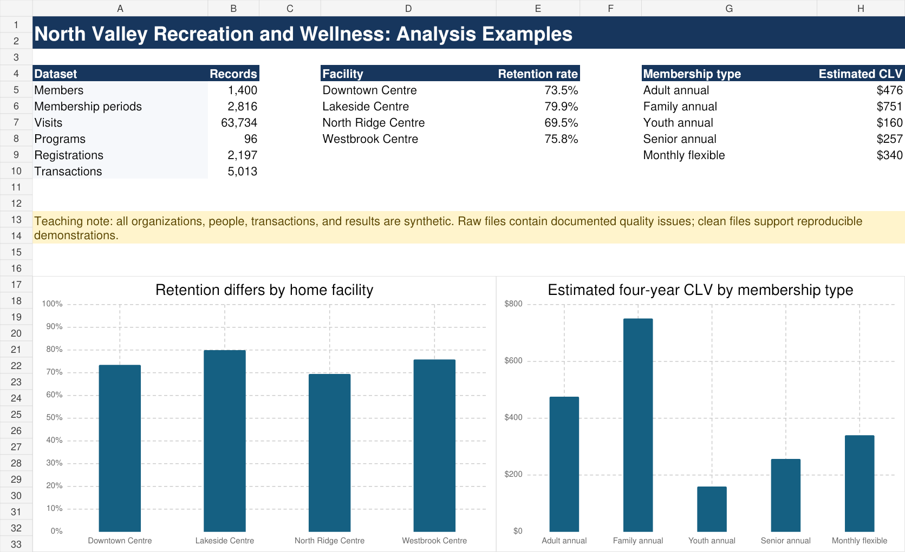

A Guide for Capstone, Consulting, and Client-Based Work
[Publication date]
Applied data science is the practice of using data to improve understanding, support decisions, and recommend action in a real setting. The work may take place in a business, public agency, nonprofit organization, consulting engagement, research partnership, or educational project. In every setting, useful analysis requires more than technical accuracy. It requires a clear problem, trustworthy data, appropriate methods, responsible judgment, and communication that helps an audience act.
Real projects rarely arrive as clean datasets paired with perfectly stated questions. The initial request may be broad. Important variables may be undocumented. Data from different sources may use incompatible definitions. The available evidence may support only part of the desired conclusion. A successful analyst must recognize these conditions, investigate them carefully, and explain how they affect the result.
This book follows the complete path of an applied data science project. It begins with problem framing and project planning, then develops practices for collaboration, data stewardship, exploratory analysis, secondary research, modelling, forecasting, financial analysis, visualization, storytelling, recommendations, and professional delivery. The central theme is that every analytical choice should contribute to a defensible decision.
The chapters are organized by project responsibility rather than by a fixed schedule. A project team will often move back and forth among them as its understanding develops.
The chapters can also be used independently. A reader preparing a data dictionary can begin with that chapter, while a team revising a presentation can move directly to storytelling, visualization, or professional delivery. Cross-references connect topics that depend on one another.
After working through the book, readers should be able to:
An analysis is not complete when the code runs or the model produces output. It is complete when the evidence has been checked, the limitations are understood, the result answers a meaningful question, and the audience can see what the result implies. Throughout the book, technical work is therefore connected to four recurring questions:
Several chapters follow a fictional organization called North Valley Recreation and Wellness, abbreviated NVRW. NVRW operates four recreation and wellness centres and offers memberships, drop-in activities, registered programs, facility rentals, and community events. Its leadership wants to understand uneven demand across locations, improve member retention, plan future capacity, and use limited marketing and program resources more effectively.
The case is entirely synthetic. Its records, people, locations, values, and results are invented for instruction. Because the same organization appears throughout the book, readers can see how project framing, documentation, EDA, secondary research, modelling, forecasting, CLV, recommendations, and communication depend on one another. Shorter examples from other industries provide contrast where a different setting is more appropriate.
Copyright © [Year] [Copyright holder]. All rights reserved.
After completing this chapter, you should be able to:
Applied data science project: A bounded investigation that uses data, analytical methods, contextual knowledge, and communication to improve understanding or support a real decision.
Client: The person or organization that commissions, sponsors, receives, or uses the project’s work. The client may be external to the analytical team or part of the same organization.
Stakeholder: Anyone who affects, is affected by, or has a legitimate interest in the project, its data, its methods, or its consequences.
Deliverable: A defined product, such as a report, model, dashboard, data dictionary, presentation, or recommendation package, that must satisfy stated content and quality expectations.
Scope: The agreed boundary of the project, including what questions, populations, data, methods, time periods, and outputs are included or excluded.
Analytical question: A question that identifies what will be described, compared, explained, predicted, or projected using data.
Success criterion: An observable condition used to judge whether a project, analysis, or deliverable has achieved its intended purpose.
Iteration: A deliberate return to an earlier stage of work so that a question, method, assumption, or deliverable can be revised using new evidence.
A conventional exercise usually begins with a prepared dataset, a specified method, and a question that is known to be answerable. An applied project begins with uncertainty. The client may describe a concern rather than a measurable problem. The data may have been collected for operations rather than analysis. Important definitions may exist only in the knowledge of staff members. The requested outcome may be broader than the available evidence can support.
These conditions change the analyst’s responsibility. The task is not simply to select an algorithm. The analyst must determine what the organization needs to understand, assess whether the available data can answer that need, choose methods that fit the evidence, and communicate the result without overstating certainty.
Applied projects also combine forms of work that are often taught separately. Data management affects modelling. Domain knowledge affects variable interpretation. Project planning affects whether sufficient time remains for validation. Visualization affects whether a correct result can be understood. Recommendations affect which assumptions matter most. A weakness in any one area can reduce the usefulness of the entire project.
Project principle: Technical sophistication does not compensate for an unclear question, unreliable data, unsupported interpretation, or unusable recommendation.
A useful way to understand a project is as a chain of connected decisions:
An error early in this chain can travel through the entire project. For example, if customer activity is measured using transactions rather than unique customers, later claims about customer growth may be misleading. If a projection uses a population denominator that does not match the client’s service area, the final capacity recommendation may be inaccurate even when the arithmetic is correct.
A practical project cycle contains six connected activities:
The stages are connected rather than strictly sequential. Exploratory analysis may reveal that the original question cannot be answered. A model may expose a data-quality problem. Secondary research may show that an important category definition has changed. Feedback may require a different comparison or projection. Returning to an earlier stage is responsible when the reason and resulting decision are documented.
Many applied projects require several kinds of evidence. Depending on the problem, a project may include:
These elements should form one argument. They should not appear as independent demonstrations joined only by a table of contents. Segmentation should clarify which groups matter. Modelling should answer a defined question. Forecasting should show the future consequence of a pattern or assumption. Secondary research should improve interpretation. Recommendations should respond to the problems established by the evidence.
Suppose a service organization says, “Demand seems to be increasing, and we do not know whether current capacity will be enough.” This statement identifies a concern, but it does not yet specify what should be measured.
The concern can be separated into several analytical questions:
Each question implies different data, definitions, methods, and limitations. The first is descriptive. The third requires compatible population denominators. The fourth is a conditional projection rather than a promise about the future. The final question may require information that is not present in the service dataset at all.
Worked example: refining a broad request
A retailer asks, “Which customers should we target?”
A useful refinement process might produce the following questions:
The refined questions prevent the team from creating attractive customer labels that have no analytical or operational purpose.
A project needs more than a completion deadline. Success criteria should address both analytical quality and practical usefulness. Examples include:
A criterion such as “produce a professional report” is too vague by itself. A stronger criterion specifies what professional quality means in the context of the project.
Quality standard: A project question should identify the population or unit, the outcome of interest, the comparison or time frame, and the intended use whenever these are known.
A complete brief defines success in observable terms. “Produce a good analysis” is not sufficient. A stronger criterion would require validated data, reproducible results, documented limitations, and recommendations that can be traced to evidence.
After completing this chapter, you should be able to:
Organizational concern: A broad issue, uncertainty, opportunity, or perceived problem that motivates investigation.
Management question: A question about what an organization should understand, decide, prioritize, or do.
Research question: A question answered by gathering and evaluating existing knowledge, external evidence, or new contextual information.
Analytical question: A question that identifies what will be described, compared, explained, predicted, classified, segmented, or projected using data.
Implementation question: A question about how a proposed action would be carried out, monitored, and adjusted.
Assumption: A condition treated as true for the purpose of analysis even though it may not be directly established by the available evidence.
Question map: A structured record connecting the organizational concern to management, research, analytical, and implementation questions.
Scope boundary: A clear statement of what the project will and will not investigate.
The first request is rarely the final question. A client may ask for a dashboard, a forecast, a customer profile, or a machine-learning model before explaining what decision the output is expected to support. Accepting the requested format without examining the underlying need can produce technically correct work that has little practical value.
Questioning is not an attempt to challenge the client’s authority or delay the project. It is a method for clarifying purpose, language, evidence, constraints, and intended use. Good questions reduce wasted analysis and make later choices easier to defend.
Consider the request, “Build a model that tells us which programs are successful.” Before a model can be selected, the team must ask what success means. Possibilities include registration volume, capacity utilization, attendance, participant retention, contribution margin, accessibility, community reach, or progress toward a public-service objective. Each definition would produce a different target and potentially a different recommendation.
Management questions describe the decision or action problem. Examples include:
These questions often cannot be answered directly by a single model. They provide the purpose to which several analyses may contribute.
Research questions seek external context or subject knowledge. Examples include:
Research questions help the team interpret internal data and avoid inventing definitions that conflict with established practice.
Analytical questions specify what can be learned from data. Strong analytical questions identify the unit, measure, comparison, time period, and intended use where possible.
Weak: “Why are members leaving?”
Stronger: “Which observed membership, usage, location, and service characteristics are associated with non-renewal within twelve months?”
The stronger question does not claim that the data can establish every cause of departure. It identifies a measurable outcome, time period, and set of candidate relationships.
Implementation questions become important when the analysis supports action:
Separating implementation from analysis prevents the team from treating a recommendation as complete merely because it sounds reasonable.
A useful conversation can move through seven stages:
These questions should be asked with genuine curiosity. The goal is to learn how the organization sees the problem while also identifying where evidence may be incomplete.
Recurring case: North Valley’s growth concern
NVRW leaders report that several facilities feel busier and ask for a forecast of future demand.
The project team asks:
The conversation reveals that the central management question concerns whether evening program space should be expanded at two locations. This leads to analytical questions about registrations, capacity, wait lists, attendance, location, program category, season, and population growth.
A question map makes the logic of the investigation visible.
| Level | NVRW example |
|---|---|
| Organizational concern | Evening programs appear crowded at some locations |
| Management question | Should NVRW expand evening program capacity, and where? |
| Research questions | How is utilization normally measured? How will local populations change? |
| Analytical questions | Which centres, programs, and periods have persistent high utilization or unmet demand? |
| Projection question | What registrations would occur under population and utilization scenarios? |
| Implementation questions | What pilot, staffing, space, budget, and evaluation plan would be required? |
The map should be revised when evidence changes the team’s understanding. A question can be removed when it is no longer relevant or marked unanswered when the available data are insufficient.
Assumptions often hide inside ordinary words. Ask:
Recording answers in the data dictionary, analytical plan, or decision log prevents definitions from changing silently later.
Quality standard: Every major analysis should connect to a documented question, and every major question should connect to a decision, understanding, or implementation need.
Rewrite the concern “Our membership is not growing fast enough” as one management question, two research questions, three analytical questions, and one implementation question.
Management: Which evidence-based actions could improve sustainable membership growth?
Research: How do comparable organizations measure active membership? What external population or participation trends affect the service area?
Analytical: How have new memberships, renewals, cancellations, and net growth changed by month? Which member groups have the lowest twelve-month retention? Which locations and acquisition channels produce members with the highest contribution margin and retention?
Implementation: What pilot could be tested with a priority group, and which measures would determine whether it should continue?
A neutral revision might ask how retention, visit frequency, membership mix, and program access at North Ridge compare with other facilities, and which observable factors are associated with the difference. This wording does not assume failure or causation.
After completing this chapter, you should be able to:
Milestone: A meaningful checkpoint that indicates a stage of the project has been completed or is ready for review.
Dependency: A relationship in which one task, decision, or resource must be completed or available before another task can proceed.
Critical task: A task whose delay would directly delay a major milestone or final deliverable unless the plan is changed.
Buffer: Time or capacity reserved to absorb uncertainty, rework, delays, or unexpected problems.
Risk register: A maintained record of possible events that could harm the project, including their likelihood, impact, warning signs, owner, and planned response.
Deliverable: A defined product that must satisfy stated content, quality, and format expectations.
Review cycle: A planned sequence of drafting, checking, feedback, revision, and approval.
Definition of done: A specific set of conditions that must be satisfied before a task or deliverable can be considered complete.
Weak plans often list topics rather than work. An entry such as “forecasting” does not identify what will be produced, which data are required, who is responsible, how the result will be checked, or when the work must be stable enough to support the report. The label creates the appearance of planning without making the project easier to manage.
A useful plan converts broad work into observable outputs. Instead of “do forecasting,” a team might plan to:
This level of detail makes dependencies visible and allows progress to be evaluated before the final deadline.
Begin with the final use of the work. Ask what the audience must understand or decide, then identify the evidence required to support that decision. From there, identify the analyses, data preparation, research, and review work needed to create that evidence.
For example, a recommendation about future service capacity may require:
Working backward prevents the final report from becoming a collection of whatever analyses happened to be completed. It also reveals missing inputs early enough to adjust the question or seek additional evidence.
A project task should usually be small enough to assign, estimate, review, and complete within a few hours or a short working session. Tasks that remain too large should be divided again.
Each task should answer five questions:
Ownership does not mean that one person works without input. It means the team knows who is responsible for moving the task forward and reporting when it is ready for review.
The first attempt is only one part of the work. A more complete estimate is:
Here, production is the time required to create the first complete version. Verification includes checking data, formulas, code, outputs, and interpretation. Revision includes changes after review. Integration includes reconciling the work with other analyses and deliverables. Contingency is a reasonable allowance for uncertainty.
Planned effort should be expressed in person-hours. Calendar time is different because a four-hour task may take several days to complete if it depends on a response, approval, file transfer, software installation, or teammate review.
Worked example: estimating an EDA section
Suppose a team estimates the following:
The planned effort is
If two people can work independently on parts of the analysis, the calendar time may be shorter than 16 hours. If both people need access to a definition from the client before proceeding, the calendar time may be longer. The schedule should record both effort and waiting dependencies.
| Work package | Depends on | Evidence of completion | Typical review |
|---|---|---|---|
| Project framing | Organizational context | Agreed problem statement and scope | Project sponsor or decision owner |
| Data dictionary | Data access and source context | Reviewed variable definitions | Data lead and subject expert |
| EDA | Dictionary and initial cleaning | Reproducible findings and issue log | Full analytical team |
| Secondary research | Defined information needs | Source log and integrated evidence | Research lead and analyst |
| Main analysis | EDA and analytical plan | Validated results and limitations | Technical reviewer |
| Projections | Assumptions and baseline data | Auditable model and scenarios | Team and decision owner |
| Recommendations | Stable findings | Evidence-linked actions and measures | Team and stakeholder review |
| Final communication | Reviewed conclusions | Report, presentation, and handoff | Full team |
The table is a starting structure rather than a universal sequence. Some research can begin while the dictionary is being created. Data quality and modelling may require several loops. The important point is that every major deliverable has a visible basis and a planned review.
A milestone marks meaningful progress, while a review gate determines whether the project is ready to proceed. “EDA drafted” is a milestone. “EDA quality issues resolved or explicitly accepted” is a review gate.
Useful review gates include:
Proceeding through a failed gate without a documented decision usually creates more work later.
A risk is an uncertain event that could affect scope, quality, schedule, confidentiality, or usefulness. A problem that has already occurred is an issue, not a risk. Both should be tracked, but they require different language.
A risk register should include:
Common risk categories include data access, data quality, scope growth, weak model performance, missing context, team availability, incompatible software, confidentiality constraints, and insufficient time for integration.
Risk example
Risk: Geographic categories in the client data may not match the available population projections.
Mitigation: Compare identifiers and boundary definitions during the first week of data review.
Contingency: Aggregate both sources to the smallest geography that can be matched defensibly and explain the loss of detail.
Trigger: More than 5 percent of client records remain unmatched after standardized identifiers are applied.
Common mistake: Integration is not a final formatting step. It is analytical work that reconciles definitions, methods, evidence, citations, conclusions, and recommendations across the project.
Choose one major deliverable and decompose it into tasks that take no more than four hours each. Identify the output, owner, dependency, reviewer, definition of done, estimated effort, and one realistic risk for every major stage.
The timeline should not schedule the first integrated report after all analytical sections are complete. At least one early synthesis review is needed so definitions, questions, and evidence can be reconciled while there is still time to revise the analysis.
After completing this chapter, you should be able to:
Team charter: A documented operating agreement that explains how a project team will pursue its goals, divide responsibility, coordinate work, make decisions, review quality, manage conflict, respond to missed commitments, and revise its working procedures.
Role: A continuing function or area of responsibility assigned to a person, such as project coordination, data management, research, modelling, or editing.
Accountability: The obligation to complete agreed work, communicate progress and problems, and accept review of the result.
Consensus: A decision process in which team members seek an option that everyone can support or accept, even if it is not every person’s first choice.
Escalation: The deliberate referral of an unresolved issue to a person or process with greater authority or responsibility.
Peer review: A structured check of work by another team member for correctness, clarity, consistency, and fitness for purpose.
Handoff: The transfer of work, context, files, decisions, and responsibility from one person or stage to another.
Decision log: A chronological record of important decisions, including the issue, chosen option, rationale, date, owner, and consequences.
A team charter is the project’s internal governance document. It establishes how the team intends to operate before pressure, disagreement, or missed deadlines make those questions urgent. It is more specific than a statement of values and broader than a task list.
A useful charter connects principles to behaviour. “We value respect” is a positive statement, but it does not explain what respectful work looks like. The charter might instead state that members circulate material before requesting review, respond to project messages within an agreed period, critique the work rather than the person, record decisions after meetings, and raise schedule problems before a deadline is missed.
The charter should also describe what happens when normal procedures fail. Teams need a method for resolving a tied decision, addressing repeated non-performance, replacing an unavailable reviewer, and changing a role when the original division of work no longer fits the project.
Charter principle: A team charter should reduce avoidable ambiguity. If the team faces a foreseeable coordination problem, the charter should explain how it will be handled.
A complete charter normally addresses six areas.
The charter should state the project’s purpose and the team’s measurable, time-bound goals. “Finish the analysis early” is difficult to evaluate. “Complete an internally reviewed analysis draft five working days before stakeholder review” identifies an output, a quality condition, and a deadline.
Roles identify continuing areas of ownership. Responsibilities identify specific duties within those roles. Task assignments identify the current work. These are related but not identical.
For example, the data lead may own the reproducible workflow, be responsible for maintaining the cleaned dataset, and currently be assigned to verify date fields. Another person should still review the work, and all team members should understand the variables that support the final conclusions.
The charter should identify primary communication channels, expected response times, meeting frequency, attendance expectations, procedures for notifying the team of an absence, and the minimum information needed in meeting records.
The team should decide when consensus is required, when a role owner can decide, how ties will be resolved, and when a decision must be escalated. It should also identify who reviews important outputs and what evidence is required before work is accepted.
The charter should explain where files are stored, how versions are named, who controls shared folders, how code and outputs are connected, and what information must accompany a handoff. A file without context is not a complete handoff.
The charter should establish a respectful process for addressing disagreement, missed commitments, and recurring quality problems. It should also state how the charter itself can be revised. The agreement is dated, accepted by all members, and updated when operating conditions change.
Roles provide primary ownership, not exclusive control. Useful roles may include:
In a small team, one person may hold several roles. In a larger team, a role may be shared. In both cases, important work should have an owner and a reviewer.
Silos occur when team members understand only their assigned piece. This creates serious integration risks. A modelling lead may use a category definition that differs from the EDA. A presentation designer may simplify a result in a way that changes its meaning. A recommendation lead may propose an action that assumes a model can establish causation. Regular cross-review reduces these risks.
Not every decision requires the entire team. Requiring consensus for minor choices wastes time, while allowing one person to make a major scope or interpretation decision can create conflict.
A charter can distinguish among:
The decision log preserves why a choice was made. This is especially important when a later result depends on an earlier definition, exclusion, or assumption.
A useful meeting produces a record of project movement. At minimum, record:
Meetings should focus on decisions, integration, and obstacles. Routine status information can often be shared before the meeting. A concise agenda and decision record are more valuable than lengthy minutes that do not identify what changed.
Worked example: converting a vague agreement into a charter rule
Vague statement: “Everyone will review the report.”
Operational charter rule: “The report editor will assign each major section to a reviewer at least three working days before internal approval. Reviewers will check numerical consistency, interpretation, citations, and alignment with the central message. The section owner will record how each material comment was resolved.”
The revised rule identifies timing, ownership, review criteria, and evidence of completion.
Disagreement is normal in analytical work. Team members may reasonably disagree about definitions, methods, interpretations, or priorities. The goal is not to prevent disagreement but to resolve it using evidence and agreed procedures.
A practical response sequence is:
Escalation should not be used to avoid ordinary discussion. It is appropriate when the team lacks authority, confidentiality may be affected, a repeated problem threatens delivery, or an unresolved disagreement could materially change the result.
Quality standard: A collaboration process should protect respectful communication while still addressing recurring non-performance, unreliable work, and threats to project quality.
Rewrite each vague expectation as observable team behaviour:
For each revision, identify how the team would know whether the expectation had been met.
A strong charter does more than assign topics. It defines how work is reviewed, how decisions are recorded, where authoritative files are stored, and what happens when work is late, incomplete, or inconsistent with the agreed standard.
After completing this chapter, you should be able to:
Interim review: A structured examination of project progress, evidence, risks, and remaining work before final delivery.
Project trajectory: The direction of the project relative to its intended scope, quality, and schedule.
Progress evidence: An observable product or verified result demonstrating that work has advanced.
Blocker: An issue that prevents important work from proceeding until it is resolved.
Decision request: A clearly stated choice or approval that the team needs from a stakeholder or project authority.
Open question: A material uncertainty that has not yet been answered or resolved.
Feedback log: A record of comments received, their significance, the response, owner, and status.
Recovery plan: A revised set of priorities, responsibilities, and dates designed to return a project to a feasible path.
An interim review is not a shortened final presentation. Its purpose is to determine whether the project is developing into credible and useful work while there is still time to change direction. A team that waits until final delivery to reveal a weak question, incompatible data source, unsupported method, or unrealistic recommendation has lost the main benefit of review.
Good interim reviews make uncertainty visible. They distinguish completed work from preliminary work, facts from hypotheses, decisions from proposals, and ordinary tasks from risks that require intervention. This transparency allows reviewers to focus on the choices that could materially improve the project.
An effective review answers five questions.
State the organizational concern, management question, analytical questions, intended audience, and scope. If these have changed, explain why.
Present verified evidence, such as confirmed variable definitions, reproducible data-quality findings, documented secondary sources, stable descriptive patterns, baseline models, or tested projection assumptions. Do not use polished visuals to make uncertain work appear final.
Identify unresolved definitions, data gaps, model limitations, client questions, and competing interpretations. Explain the consequence of each uncertainty.
Assess scope, quality, dependencies, workload, and remaining calendar time. “We are on track” is a conclusion that requires evidence. A revised timeline, completed milestones, open-risk count, and remaining review cycles provide stronger support.
End with specific decisions, feedback requests, action owners, and near-term milestones. Reviewers should know where their input is most valuable.
Activity is not the same as progress. Hours spent, meetings held, and graphs created may indicate effort but do not establish that the project is closer to a defensible result.
Strong progress evidence includes:
A concise interim presentation can follow this sequence:
The presentation should have thematic cohesion even though the work is unfinished. A central message such as “Growth is concentrated in two locations, but incomplete capacity records must be resolved before expansion can be recommended” is more informative than a sequence of unrelated updates.
Recurring case: NVRW interim review
The NVRW team has completed its data dictionary and initial EDA. It has verified that total visits increased, but most growth occurred at Lakeside and Central during weekday evenings. It has also found that program-capacity records are missing for one historical year.
The team presents three conclusions:
The team asks for a decision about whether to limit the capacity analysis to the two years with reliable records or seek a corrected historical extract. This is a useful interim review because it connects findings, uncertainty, trajectory, and a decision request.
Project trajectory should be assessed across several dimensions.
| Dimension | Evidence that the trajectory is healthy | Warning sign |
|---|---|---|
| Scope | Questions fit the available time and evidence | New analyses are added without removing work |
| Data | Definitions and material issues have owners | Basic meanings remain unresolved |
| Analysis | Methods follow from questions and include validation | Tools are chosen mainly for novelty |
| Integration | Findings contribute to one argument | Team members produce isolated sections |
| Schedule | Review and revision time remains | First integration occurs near delivery |
| Communication | Preliminary conclusions are qualified | Uncertain work is presented as established |
When trajectory is weak, the appropriate response may be to narrow scope, replace a method, seek a decision, redistribute work, or revise a deadline where authority permits. Working faster is not always a sufficient recovery plan.
Feedback should be recorded and interpreted, not merely collected. For every material comment, record:
Conflicting feedback may require clarification or escalation. A team should not quietly select the easiest comment while ignoring the one that most affects project validity.
Quality standard: An interim review should make it easier to improve the final project by revealing verified progress, material uncertainty, trajectory, and the decisions needed next.
Given a project with an incomplete data dictionary, several polished graphs, no validation plan, and two weeks remaining, write a five-point recovery plan.
An interim review should demonstrate progress with evidence, not activity counts alone. Useful trajectory indicators include completion of reviewed analytical questions, validated joins and denominators, and an early recommendation-evidence map.
After completing this chapter, you should be able to:
Confidentiality: The obligation to prevent information from being disclosed to people, systems, or purposes that have not been authorized.
Privacy: The rights and expectations associated with how information about individuals is collected, used, linked, shared, retained, and disclosed.
Data stewardship: The responsible management of data throughout its lifecycle so that it remains secure, understandable, reliable, appropriately used, and properly retained or disposed of.
Minimum necessary access: The principle that people and systems should receive only the data and permissions required for an approved purpose.
De-identification: The removal, masking, or transformation of direct and indirect identifiers to reduce the likelihood that a person or organization can be recognized.
Third-party service: An external platform, application, model, storage provider, or vendor that receives, processes, stores, or transmits project information.
Data-use agreement: A formal agreement that defines permitted data, users, purposes, safeguards, disclosures, retention periods, and other conditions of access.
Receiving access to data does not transfer ownership or create unrestricted permission. Data remain subject to the conditions established by the data owner, applicable agreements, organizational policy, ethical expectations, and relevant law. A person may be authorized to analyze a file without being authorized to email it, place it on a personal device, upload it to a cloud service, publish a chart, reuse it for another project, or retain it after the work ends.
Responsibility extends beyond the original dataset. Derived and communication products may contain the same sensitive information in a different form. These products include:
A project should therefore treat data protection as a workflow, not as a single decision made when the file is first received.
These concepts overlap but are not interchangeable.
Privacy concerns appropriate treatment of information about people. Confidentiality concerns the duty to prevent unauthorized disclosure. Security concerns the controls used to protect information, such as permissions, encryption, approved storage, and secure transfer. Ethics asks whether the use is fair, responsible, and consistent with the interests of affected people, even when the use is technically permitted.
For example, a dataset may be stored securely but used for a purpose that participants did not reasonably expect. Alternatively, an analysis may have a legitimate purpose but be disclosed through a chart that reveals a small or distinctive group. Responsible practice requires attention to all four areas.
Collect, access, retain, and disclose only what is needed for the approved analytical purpose. This principle can be applied through several questions:
Minimum necessary use reduces harm if a mistake occurs. It also forces the team to clarify which variables genuinely contribute to the project.
Removing names is often necessary, but it may not be sufficient. A combination of age, postal area, event date, occupation, diagnosis, transaction history, or another uncommon attribute can make a record recognizable. External information may also allow apparently anonymous records to be linked back to individuals or organizations.
The level of risk depends on the data, the population, the audience, and the release environment. A detailed internal table in an approved secure location may be acceptable while the same table would be inappropriate in a public presentation.
Worked example: indirect disclosure
A report compares service use across small regions. One region contains only two cases in a rare category. The report does not include names, but local staff may know who the two people are.
Possible responses include aggregating regions, combining categories, suppressing the small value, reporting a rate only when the denominator is sufficient, or moving the detail to a restricted internal output. The correct response depends on the applicable rules and the analytical need.
Organizational, contractual, and client policies determine whether an external tool may be used. The availability of a tool does not establish permission.
Do not place confidential or restricted information into a generative AI system, proofreading service, translation service, code assistant, visualization platform, or other third-party service unless that specific use has been approved. Removing obvious names may not be enough, and a prompt can disclose sensitive context even when no file is attached.
Before using an external service, determine:
Synthetic data are often useful for testing code, requesting generic technical help, or demonstrating a method without exposing real records. Synthetic data should not be presented as evidence about the client or population.
Data responsibility also concerns interpretation. An analysis can cause harm without revealing individual records. Poorly chosen groups can reinforce stereotypes. A model can systematically perform worse for an important population. A recommendation can disadvantage people who were underrepresented in the source data. A confident conclusion can hide uncertainty that matters to the decision.
Responsible review should therefore ask:
Data stewardship continues from receipt through final disposition.
Copies often multiply during a project. Downloads, email attachments, local exports, presentation images, and backup folders must all be considered when the project ends.
Common mistake: A free, popular, or institutionally accessible service is not automatically approved for confidential data. Permission depends on the specific data, purpose, agreement, and service configuration.
A responsible treatment might aggregate categories, suppress a small cell, report a range, or restrict the output to an authorized audience. The choice should follow the data agreement and should be disclosed rather than hidden.
After completing this chapter, you should be able to:
Data dictionary: A structured reference that documents the meaning, format, valid values, source, quality, and use of data elements in a dataset.
Codebook: A structured description of variables and coded values, often emphasizing how categories or responses are represented. In practice, the terms codebook and data dictionary frequently overlap.
Data element: A single defined item of information, usually represented by a field or variable.
Allowed value: A value or category that is valid for a data element under its definition and business rules.
Missing-value code: A stored value, symbol, or blank that represents unavailable, unknown, inapplicable, suppressed, or otherwise unrecorded information.
Derived variable: A variable created from one or more source fields using a documented rule or calculation.
Unit of analysis: The entity represented by one observation in an analysis, such as a person, transaction, visit, product, location, or month.
Provenance: The documented origin and history of data, including its source, collection context, version, and transformations.
A column name is not a definition. A variable called
status, revenue, active, or
date may have an obvious technical format while still
having an uncertain business meaning. Does revenue include
tax, refunds, or discounts? Does active refer to a current
contract, a recent visit, or any transaction during the year? Is
date the date of purchase, entry, service, posting, or
extraction?
A data dictionary creates a shared and reviewable interpretation. It allows analysts, subject experts, and decision makers to identify disagreement before different definitions appear in code, charts, models, and recommendations.
The dictionary is therefore a quality-control tool. It connects business meaning to technical implementation. When an analyst changes a category, derives a rate, or resolves missing values, the dictionary records the decision and makes it available to the rest of the project.
Before documenting individual variables, determine what one row represents. This is the unit of analysis or grain of the table. A table may contain one row per member, membership period, facility visit, program registration, transaction, location-day, or location-month.
Confusing these units creates serious errors. A member with twenty visits appears twenty times in a visit table. Counting rows would measure visits, not members. Joining a one-row-per-member table to the visit table duplicates member characteristics across visits, which may be appropriate for visit-level analysis but not for estimating the number of members.
The dictionary should state the unit clearly and explain the keys that identify one observation.
Recurring case: NVRW data structure
North Valley Recreation and Wellness provides four files:
members: one row per member;memberships: one row per membership period;visits: one row per recorded facility entry; andtransactions: one row per purchase line.The four tables cannot be summarized or joined in the same way. The dictionary records each table’s grain, primary identifier, time coverage, and relationship to the other files before the team begins analysis.
Information that applies to the complete file should be recorded once rather than repeated in every variable row. This commonly includes:
Dimensions and missing counts change when the dataset changes. These values are meaningful only when they are attached to a date or version.
Use one row per variable in a formatted table that can be filtered and reviewed.
| Field | Purpose |
|---|---|
| Data element name | Client-friendly name |
| Dataset variable name | Exact name used in code or software |
| Definition | Detailed business meaning |
| Data type | Character, integer, decimal, date, logical, and so on |
| Format | Date pattern, precision, or code pattern |
| Allowed values or range | Valid categories or numeric limits |
| Default value | Value supplied when no other value is entered |
| Requirement status | Required, conditionally required, or optional |
| Constraints and rules | Uniqueness, business rules, keys, and restrictions |
| Source | Original field, secondary source, or derived field |
| Relationships | Links to identifiers, tables, or related variables |
| Example values | Safe examples that clarify interpretation |
| Missing-value representation | Blank, NA, Unknown, special code, and so
on |
| Missing count or rate | Extent of missingness for the stated version |
| Unit | Dollars, minutes, percentage, count, and so on |
| Derivation | Reproducible rule for an engineered variable |
| Sensitivity | Privacy classification or handling restriction |
| Owner or steward | Person or role responsible for meaning or quality |
| Status and notes | Changes, ambiguities, corrections, or caveats |
Not every variable will have a default, constraint, or relationship.
Record None or Not applicable when the absence
matters. Zero missing values should also be documented rather than left
blank.
Preserve the original source field. Create new variables for corrections, standardization, and analysis. This makes the transformation visible and allows the analyst to compare the result with the original.
For example, NVRW’s source field home_site contains
Central, CENTRAL, Ctr, and
01. The team creates home_centre_std using a
documented mapping. A separate field, centre_region, groups
centres for a regional comparison. The dictionary identifies the first
field as source data, the second as standardized, and the third as
derived.
Derived variables need enough detail to reproduce them. “Member tenure” is incomplete. A useful entry identifies the dates used, unit, treatment of partial periods, and reference date.
Sample dictionary entries
| Variable | Definition | Type and format | Allowed values | Missing rule | Source or derivation |
|---|---|---|---|---|---|
member_id |
Anonymous identifier for one member | Character, 10 positions | Unique nonblank code | Missing not permitted | Membership system |
visit_time |
Recorded facility check-in time | Date-time, local time | Valid time within extract period | Blank means entry was not recorded | Access system |
contribution_margin |
Revenue less directly attributable service or product cost | Decimal, dollars | May be negative after refund | Missing when direct cost unavailable | net_revenue - direct_cost |
retained_12m |
Whether a member has an active membership 12 months after the initial start | Logical | TRUE, FALSE |
Missing when 12-month observation window is incomplete | Derived from membership periods |
The entries reveal that retained_12m cannot be
calculated for recent members. Treating those cases as non-retained
would bias the analysis.
NA, blank, zero, Unknown,
Not asked, and Not applicable may describe
different processes. Combining them without investigation can hide a
system problem or change the population being analyzed.
For each variable, determine:
If no values are missing, record a count of zero for the current version. This confirms that the field was checked.
A practical workflow is:
Excel is often well suited to the dictionary because tables can be filtered, reviewed, and annotated. Use a formatted table, freeze headings, apply consistent validation lists where helpful, and avoid merged cells that interfere with sorting. The content, however, must remain consistent with the variables used in R, Power BI, Excel, or another analytical environment.
The dictionary should be consulted whenever the team:
A finding that depends on an uncertain definition should remain provisional until the definition is resolved or the limitation is accepted.
Quality standard: Another analyst should be able to reproduce the same variable interpretation, inclusion rules, and derivations without asking the original author.
An analyst defines active_member as “active member” and
codes recent members without a full twelve-month observation period as
FALSE. Identify two problems and rewrite the entry.
The definition repeats the name without specifying the rule, and members
who cannot yet be observed for twelve months are incorrectly treated as
known non-retained cases. A stronger variable might be
retained_12m: “Member has an active membership on the date
twelve months after the initial membership start.” Allowed values are
TRUE, FALSE, and missing when twelve months of
follow-up are unavailable. The derivation should identify the membership
dates and extract date used.
data/nvrw/data_dictionary.csv. Select five
variables from at least three datasets and evaluate whether each
definition identifies the unit, timing, allowed values, and
interpretation clearly enough for a new analyst.data/nvrw/raw/members.csv with
data/nvrw/clean/members.csv. Document the standardization
rule for membership_type, service_area, and
postal_fsa without describing the cleaned result as the
original source value.A complete derived-variable entry should make independent reproduction possible. Program fill rate, for example, must specify whether cancelled registrations count, whether capacity is measured at registration close or program start, and how programs with missing or zero capacity are handled.
After completing this chapter, you should be able to:
Exploratory data analysis (EDA): A structured investigation of data quality, distributions, relationships, patterns, limitations, and analytical possibilities.
Data quality: The degree to which data are accurate, complete, consistent, timely, valid, and suitable for their intended use.
Distribution: The pattern of values taken by a variable, including their frequency, centre, spread, shape, and extremes.
Missingness: The amount, pattern, and process through which expected data values are absent.
Outlier: An observation that is unusually distant from or inconsistent with other observations under a relevant definition.
Unit of analysis: The entity represented by one observation in an analysis.
Univariate analysis: The examination of one variable at a time.
Bivariate analysis: The examination of a relationship or comparison involving two variables.
Multivariate analysis: The examination of relationships involving three or more variables.
Reproducibility: The ability to recreate results from documented data, code, settings, transformations, and decisions.
Exploratory data analysis is the disciplined process of learning what the data contain, how they were produced, which problems they have, and which relationships deserve further analysis. It is not a gallery containing one default graph for every variable.
A useful EDA has two audiences. The analytical team needs detailed evidence about quality, definitions, distributions, and feasibility. Decision makers need a clear account of which patterns and limitations affect the problem. The EDA report should serve both purposes without confusing exploration with final explanation.
EDA should help the team:
Record the source and version of each file, unit of analysis, dimensions, identifiers, time coverage, geographic coverage, variable types, and relationships between tables. Confirm that the number of records agrees with source documentation when a reference total exists.
dim(data)
names(data)
str(data)
summary(data)These commands are only an opening inspection. They do not replace business definitions or targeted quality checks.
Check for:
The Quartz guide provides a useful taxonomy of data problems that may require action by the source, analyst, subject expert, or programmer (Quartz, n.d.). Classifying ownership prevents analysts from inventing corrections to questions that require domain authority.
Choose summaries that match the variable.
For categorical variables, examine counts, proportions, rare levels, ordering, and missingness. For numeric variables, examine centre, spread, range, quantiles, zeros, shape, and extremes. For dates and times, examine coverage, gaps, seasonality, incomplete periods, and operational cycles.
Do not report every available statistic. Report the features that affect interpretation or later analysis.
Bivariate analysis should follow from a question. Useful comparisons include outcomes by group, counts and rates over time, numeric outcomes across categories, relationships between numeric variables, and missingness by source or period.
Always distinguish counts from rates. A facility with more visits may simply serve a larger population or operate more hours. A program with more cancellations may also have far more registrations.
Multivariate exploration examines whether an apparent relationship changes after another variable is considered. Faceting, stratification, grouped summaries, correlation analysis, and exploratory models can reveal that a system-wide pattern is concentrated in one location, period, or group.
Identifier codes and arbitrary category numbers should not be placed in a correlation matrix simply because software stores them as numbers.
End with verified facts, important limitations, patterns requiring explanation, candidate problems or opportunities, next analytical questions, and decisions about exclusions or scope.
Missingness should be investigated as a process. Ask whether values are missing because the field was not collected, did not apply, failed during entry, was suppressed, or was lost during extraction. Examine whether missingness changes over time, by system, location, group, or outcome.
Possible responses include:
Imputation creates estimated values. It does not recover the unknown truth, and it should not be performed only to satisfy software that rejects missing data.
An outlier may be a data error, a rare valid event, a different population, or the most important case in the dataset. Investigate its source, units, context, and influence before deciding what to do.
Appropriate actions may include correcting a verified error, retaining and explaining a valid extreme, analyzing with and without the observation, using a robust method, separating a different population, or flagging the case for operational review.
Recurring case: NVRW visit data
The NVRW EDA finds one member with 642 recorded visits in a year. Automatic deletion would be premature. The team checks timestamps and discovers that many entries occur seconds apart at the same gate, indicating repeated scanner events. After confirming the system behaviour, it creates a visit episode rule that keeps only the first scan within a defined interval.
The source records remain unchanged. The derived episode identifier, interval rule, number of affected scans, and consequence for facility totals are documented in code and in the dictionary.
NVRW’s initial concern is uneven demand and possible capacity pressure. The EDA establishes:
These findings change the project. The team narrows capacity analysis to reliable periods, separates visits from unique users, adds a retention model with a valid observation window, and seeks population projections for the two growing service areas.
A complete report commonly contains:
Use prose when a decision or interpretation requires explanation. Number and label tables and figures, and discuss each one in the text.
Common mistake: A visible difference is not automatically meaningful. Consider denominators, sample size, incomplete periods, multiple comparisons, data quality, and practical importance before treating a pattern as a finding.
NVRW has 2,400 missing acquisition-channel values. Almost all occur before a new registration system was introduced. Should the team impute a channel for these records?
Not automatically. The missingness is strongly connected to the collection period, so imputation may create unsupported historical detail. The team should document the system change, compare periods with and without reliable channel data, and limit channel-based conclusions to the comparable period unless a defensible reconstruction source exists. A sensitivity analysis may be useful if the older records materially affect a later model.
data/nvrw/raw/visits.csv to create a data-quality
table containing total rows, distinct visit identifiers, duplicate
identifiers, missing durations, and durations above 360 minutes. Explain
which issues affect visit counts and which affect duration
analysis.The raw visit file contains more rows than distinct visit identifiers. A defensible analysis should remove confirmed duplicates before counting visits, but it should not discard complete visit rows merely because duration is missing.
After completing this chapter, you should be able to:
Primary data: Data collected directly for the project or purpose currently being investigated.
Secondary data: Data previously collected by another person or organization for a different or broader purpose and reused in the current analysis.
Provenance: The documented origin, collection context, ownership, version, and transformation history of data.
Comparability: The degree to which values from different sources can be meaningfully compared because their populations, definitions, periods, units, and methods align.
Benchmark: A reference value or standard used to evaluate performance, position, or change.
Metadata: Information that describes a dataset’s content, structure, definitions, collection methods, quality, ownership, and use.
Citation: A formal acknowledgement that identifies the source of data, ideas, methods, or other material.
Data lineage: The traceable path from an original source through transformations, joins, calculations, and outputs.
Organizational data describe activity within one system. They may show which services were used, which products were purchased, or which customers were retained, but they do not automatically explain the surrounding population, economy, industry, policy environment, or comparable practice.
Secondary evidence can provide:
More sources do not automatically strengthen an analysis. Each source should answer a defined information need and be sufficiently comparable for the intended use.
Searching without a clear need often produces a collection of interesting facts that never contributes to the project. State the need in one sentence before searching.
Weak need: “Find recreation statistics.”
Stronger need: “Find annual population estimates and projections by age group for the four service areas used in NVRW’s visit data so that group-specific utilization rates can be calculated through 2035.”
The stronger statement identifies the measure, geography, categories, purpose, and period.
Library guides, data catalogues, government portals, scholarly databases, and professional associations can be useful starting points. When a guide points to an original dataset or report, evaluate and cite the original source whenever possible.
Identify who produced the data, why they collected it, how it is maintained, and whether revisions are documented. A commercial summary may be useful for orientation while an official statistical table is more appropriate for a denominator.
Determine who or what is included and excluded. A survey of current members cannot represent former members who left before the survey. Online reviews cannot be treated as a random sample of all users.
Two sources can use the same label while measuring different concepts. “Participation” could mean at least one activity per year, a registered program, a facility visit, or weekly exercise. Read the definition, questionnaire, calculation rule, and unit.
Check whether the period aligns with the project and whether values are preliminary, revised, or final. A recent publication may still contain older reference-period data.
The source must be detailed enough for the question but not so detailed that estimates are unreliable or cannot be matched. Geographic, age, product, and time categories should be compared before analysis.
Confirm whether data, tables, figures, or code can be reused. Record the licence, attribution, and citation requirements. Public accessibility does not mean unrestricted reuse.
A source log supports both research quality and reproducibility.
| Field | Example |
|---|---|
| Information need | Population projection by age and service area |
| Source organization | Statistical agency |
| Dataset or publication | Population projections table |
| URL or identifier | Stable table or catalogue link |
| Access date | Date retrieved |
| Reference period | Historical base and projection years |
| Population and geography | Residents by specified service area |
| Variables and units | Persons, age group, projection scenario |
| Limitations | Boundary and scenario assumptions |
| Transformations | Age regrouping and geographic aggregation |
| Citation and licence | Required attribution and reuse conditions |
| Decision | Accepted, rejected, or used with qualification |
Rejected sources should remain in the log with a reason. This prevents the team from repeating the same search and demonstrates that source selection was deliberate.
Never join sources using labels alone without checking definitions. Geographic names, age bands, fiscal years, service categories, and identifiers may differ. Preserve original fields and document every mapping.
Before a join, ask:
After the join, verify row counts, duplicate keys, unmatched records, totals, and whether the join changed the unit of analysis.
Recurring case: selecting NVRW population data
NVRW wants population denominators for its four service areas. One source provides current municipal populations, while another provides projections for larger planning regions. Neither aligns perfectly with the organization’s postal-area service boundaries.
The team documents three options: use municipalities and accept incomplete alignment, aggregate NVRW activity to planning regions, or construct a postal-area crosswalk using a compatible census geography. It selects the planning-region approach for long-term projections because the boundaries and projected populations are available consistently. The loss of local detail is reported as a limitation.
CensusMapper provides an interactive way to identify Canadian census
datasets, regions, and variables (CensusMapper, n.d.). The
cancensus package can retrieve census data and spatial
geometries for reproducible R work after an API key is configured (Bergmann, Shkolnik, and
Jacobs 2026). Similar principles apply to census and
geographic sources in other countries.
When using census data:
Population counts and projections are not interchangeable. Counts describe an observed or estimated period. Projections estimate future populations under stated demographic assumptions.
External research can establish that a problem is plausible or important, but it should not replace evidence about the organization when a recommendation is directed at that organization. An industry report showing that retention matters does not establish that NVRW has a retention problem. The internal data must demonstrate the local pattern.
Secondary evidence is strongest when it improves definition, provides a valid comparison, supplies a denominator, tests plausibility, or explains why a finding deserves attention.
Quality standard: A reader should be able to trace every secondary value from the final output to its source, version, definition, transformation, and role in the argument.
One source reports that 62 percent of residents participated in recreation during the past year. NVRW reports that 18 percent of residents held a membership at year-end. Can the values be used to estimate NVRW’s market share?
Not without additional evidence. The numerator definitions differ: annual participation may include any recreation activity, while year-end membership includes a narrower status at one organization. The populations, geographic boundaries, age eligibility, reference periods, and data-collection methods must also be compared. The external percentage may provide context, but it is not automatically a compatible market denominator.
The revised statement should expose the utilization assumption. Population growth produces the same percentage increase in projected visits only when the relevant utilization rate, boundaries, definitions, and service conditions are held constant.
After completing this chapter, you should be able to:
Analytical plan: A documented explanation of the question, data, variables, method, validation, outputs, assumptions, and decision criteria for an analysis.
Target variable: The outcome a supervised model is intended to predict or explain.
Feature: A variable used as an input to a model.
Training data: Observations used to estimate model parameters or learn patterns.
Validation: Evaluation using observations not used to fit the model, or another defensible procedure that estimates performance beyond the training data.
Baseline: A simple reference method against which a more complex model is compared.
Data leakage: The use of information during model development that would not legitimately be available when a prediction is made.
Classification threshold: The probability cutoff used to convert a predicted probability into a class decision.
Hyperparameter: A model setting selected outside the ordinary parameter-estimation process, often through resampling or validation.
Clustering: An unsupervised method that groups observations according to a defined measure of similarity.
Method selection begins with the decision, not the algorithm. Before modelling, state:
A model can perform well on a metric while failing the practical purpose. A retention classifier that identifies likely non-renewals only after the membership has expired is too late to support an intervention. A program-demand model may have acceptable average error but fail badly for the locations where staffing decisions are most costly.
For time-dependent data, random splitting may allow future information to influence the past. For repeated observations from the same member, site, or event, group-based splitting may be required to prevent the same entity from appearing in both training and evaluation sets.
Linear regression models a numeric response as a function of one or more explanatory variables. A simple model has the form
Multiple regression includes several features and may include transformations or interactions. The coefficients describe expected changes under the model, holding other included variables constant. They do not automatically establish causal effects.
Important checks include linearity where assumed, residual patterns, influential observations, changing variance, collinearity, and performance on appropriate evaluation data. A low p-value does not establish useful predictive accuracy, and a high coefficient of determination does not guarantee that the model will generalize.
Recurring case: predicting program attendance
NVRW models the number of attendees for a scheduled program using capacity, registration count, wait-list count, program category, location, day, start time, season, and lead time before the program begins.
The model is useful only if features are available at the planning date. Final registration count cannot be used for a forecast made four weeks earlier. The team therefore creates features measured at a common four-week cutoff and compares the model with a baseline that uses the historical average for the same program category and season.
Logistic regression estimates the probability of a binary outcome. Rather than modelling the outcome directly, it models the log-odds:
Predicted probabilities must be separated from final class decisions. A threshold of 0.50 is not automatically appropriate. The best threshold depends on the cost of false positives, the cost of false negatives, available intervention capacity, and the distribution of predicted risk.
For retention analysis, useful metrics may include area under the ROC curve, precision, recall, specificity, calibration, lift in a targeted group, and expected intervention value. Accuracy alone can be misleading when most members renew.
Recurring case: twelve-month retention
NVRW defines the target as whether a new member remains active twelve months after joining. Recent members without a complete observation window are excluded from model development rather than labelled as non-retained.
The model uses information available during the first sixty days, such as membership type, location, acquisition channel, visit frequency, program registration, and service contacts. It does not use later renewal transactions, because that would leak the outcome into the features.
A decision tree repeatedly divides observations into groups using feature-based rules. Trees are attractive because a sequence of splits can be explained in plain language. They can represent nonlinear relationships and interactions without requiring the analyst to specify each one in advance.
An unrestricted tree can fit noise. Control complexity through depth, minimum node size, or cost-complexity pruning, and select settings through validation. A single tree may also be unstable: a modest change in the training data can produce different splits.
Interpretability does not make every tree explanation causal. A split indicates how the fitted model separates observations, not why the outcome occurs.
A random forest fits many decision trees using resampled observations and randomly selected features, then combines their predictions. The method often improves predictive stability and accuracy relative to one tree, especially when relationships are nonlinear or involve interactions.
The cost is reduced simplicity. Feature-importance measures can help describe the model, but they should be interpreted carefully. Importance may be affected by correlated features, variable scale, and the chosen measure. Partial-dependence or accumulated-effect displays describe model behaviour, not causal intervention effects.
Compare the random forest with a baseline and simpler model. If performance improves only slightly, the simpler model may be easier to explain, maintain, and monitor.
Clustering is unsupervised. It does not predict a known target. It groups observations according to features and a similarity rule selected by the analyst.
A defensible clustering analysis requires:
K-means seeks groups that minimize within-cluster squared distance from cluster centres. It works best for roughly compact clusters in appropriately scaled numeric features. Hierarchical clustering can reveal nested structure. Other methods may be preferable for irregular shapes, mixed variable types, or noise.
Recurring case: NVRW member segments
NVRW constructs one row per member with first-year visit frequency, program diversity, average contribution margin, digital-service use, location diversity, and twelve-month retention eligibility. After scaling the numeric features, the team compares several k-means solutions and examines stability across resamples.
One useful solution identifies frequent multi-service members, program-focused households, occasional drop-in users, and recent low-engagement members. The labels describe observed behaviour. The team does not infer income, motivation, or preferences that are absent from the data.
Metric choice should reflect action. If NVRW can contact only 500 members, precision and expected value among the 500 highest-risk eligible members may matter more than overall accuracy.
The exact package can vary, but the workflow should preserve the separation between training, tuning, and final evaluation.
library(tidymodels)
set.seed(490)
split <- initial_split(member_model_data, strata = retained_12m)
train_data <- training(split)
test_data <- testing(split)
retention_recipe <- recipe(retained_12m ~ ., data = train_data) |>
step_unknown(all_nominal_predictors()) |>
step_dummy(all_nominal_predictors()) |>
step_normalize(all_numeric_predictors())Preprocessing steps must be estimated from training data. The final test set should remain untouched until method and tuning decisions are complete.
After evaluating overall performance, inspect where errors occur. Compare performance across time periods, locations, service types, and groups that matter to the decision. A model that performs poorly for a small facility may be unsuitable for facility-level staffing even if system-wide performance is strong.
Ask whether the model could create unfair treatment, whether a feature acts as a proxy for sensitive information, and whether affected people have a reasonable way to correct inaccurate data or decisions. Prediction does not remove the need for human judgment and governance.
Common mistake: Selecting the model with the best single validation score without considering uncertainty, subgroup performance, interpretability, implementation cost, and the consequence of error.
NVRW’s retention dataset contains 85 percent renewals. A model that predicts renewal for every member has 85 percent accuracy. Has the model succeeded?
No. The model merely reproduces the majority-class rate and identifies no non-renewals. It should be treated as a baseline. Evaluation should include metrics such as recall and precision for the actionable class, calibration, lift in the group NVRW could contact, and expected value under intervention capacity and cost.
data/nvrw/derived/member_model.csv to define the
target, prediction time, eligible population, features, and excluded
information for a first-period retention model.The target should exclude censored cases. Features must be available by the stated prediction time. Model selection should not use the final test set, and the final recommendation should distinguish predictive association from a proven intervention effect.
After completing this chapter, you should be able to:
Forecast: An estimate of a future value based primarily on patterns learned from observed data.
Projection: A conditional estimate of a future quantity under stated assumptions.
Scenario: A coherent combination of assumptions used to examine one possible outcome.
Forecast horizon: The number of future periods covered by a forecast.
Seasonality: A recurring pattern associated with a regular calendar or operational cycle.
Utilization rate: The number of events or services used relative to a defined population and period.
Retention rate: The proportion of eligible customers who remain active from one defined period to the next.
Churn rate: The proportion of eligible customers who end or fail to continue the relationship during a defined period.
Customer acquisition cost (CAC): The attributable cost of acquiring a new customer under a stated allocation rule.
Customer lifetime value (CLV): The estimated economic value produced by a customer over the relationship, under a stated revenue, margin, retention, cost, and discounting model.
Discount rate: The rate used to convert future amounts into present value.
Sensitivity analysis: An examination of how results change when important assumptions or inputs change.
A forecast learns from historical patterns. A projection calculates what would occur if stated assumptions hold. A scenario combines assumptions to examine a plausible future. A target is a desired outcome.
The forecasting framework in this chapter follows the general time-series principles developed by Hyndman and Athanasopoulos (Hyndman and Athanasopoulos 2021).
These terms should not be used interchangeably. A projected 10 percent increase under an assumed marketing effect is not evidence that the intervention will cause 10 percent growth. A target of 1,000 new members is not a forecast merely because it appears on a future timeline.
Before fitting a forecasting method, determine:
Visualize the series before modelling. Look for trend, seasonality, level changes, changing variation, outliers, and structural breaks. A method that performed well under one operating system may not remain valid after a major policy, facility, or data-collection change.
A moving average smooths short-term variation by averaging the most recent observations. For a window of size ,
Moving averages are easy to explain and useful as baselines. A short window responds quickly but can be noisy. A long window is stable but reacts slowly to change. A simple moving average does not represent trend or seasonality unless those features are addressed separately.
Regression can model trend, seasonal indicators, interventions, and relevant external variables. A basic trend model is
Add seasonal indicators or transformations when justified. Regression forecasts require future values of all explanatory variables. If those future values are unknown, they must themselves be forecast or supplied as scenarios.
Residual autocorrelation indicates that time structure remains unexplained. Extrapolating a linear trend far beyond the observed period can produce implausible results.
Exponential smoothing methods update forecasts by giving greater weight to recent observations. Simple exponential smoothing is appropriate for a series with a relatively stable level and no clear trend or seasonality.
Holt’s method adds a changing trend. Holt-Winters methods add seasonality. ETS provides a general framework in which error, trend, and seasonal components can be additive or multiplicative. Additive seasonality has a roughly constant size, while multiplicative seasonality changes in proportion to the series level.
The method should be selected through time-aware validation and diagnostic review, not solely by accepting software defaults.
ARIMA models use autoregressive terms, differencing, and moving-average error terms to represent serial dependence. Seasonal ARIMA extends the structure to regular seasonal cycles.
ARIMA can be effective when historical dependence contains useful predictive information. The analyst should examine stationarity, differencing, residual autocorrelation, parameter stability, and forecast plausibility. A well-fitted ARIMA model does not automatically explain the operational cause of change.
Forecasting methods should be evaluated as they would be used. A random train-test split destroys the time order. Instead, fit on earlier periods and evaluate on later periods.
Rolling-origin evaluation repeats this process across several cutoffs:
Compare MAE, RMSE, scaled error, interval coverage, and performance at the required horizon. A method that is strong one month ahead may be poor twelve months ahead.
Recurring case: monthly visits
NVRW compares a seasonal naive baseline, a three-month moving average, seasonal regression, ETS, and seasonal ARIMA for monthly facility visits. Evaluation uses rolling cutoffs with a twelve-month horizon.
ETS has the lowest average MAE, but its errors are concentrated at Lakeside after a facility expansion. The team reports separate location models and notes that the post-expansion period provides limited evidence for long-range forecasting.
Suppose an organization observed events for group in period , and the corresponding population was . The utilization rate per 1,000 people is
If the projected future population is , a constant-rate projection is
The rate may use the latest complete year, a selected comparable year, an average of recent years, a recent minimum or maximum for scenarios, or a modelled rate. The choice should reflect data quality, stability, horizon, and decision purpose.
Recurring case: projected aquatics demand
NVRW records 3,600 annual aquatics visits among 24,000 residents in one age group.
If the projected population is 27,200, the constant-rate projection is
The result is conditional on the rate remaining constant. It does not account for pricing, capacity, program changes, competition, weather, or the facility expansion.
Client and population data must share compatible age, location, or other grouping variables. Details available only in the organizational data can be allocated after the population projection only when a defensible rule exists.
Unknown locations should not be silently deleted. They may be reported separately, assigned a broader valid denominator, or carried forward as a stable share. Each treatment changes interpretation.
A useful projection often includes several plausible assumptions:
Scenarios are not confidence intervals. A confidence or prediction interval is produced by a statistical uncertainty model. A scenario is a selected combination of assumptions.
A result labelled “with recommendation” is not a forecast unless the intervention effect has been estimated from defensible evidence. When the effect is assumed, show the assumption and label the result as a scenario.
CLV translates customer behaviour into a long-term economic measure. It can support acquisition spending, retention priorities, segment strategy, service design, and evaluation of customer relationships. The formula must match the decision and available data.
CLV is not one universal formula. Different models answer different questions and require different assumptions (Gupta et al. 2006).
A simple revenue-based model is
This version is useful for understanding the role of value, frequency, and lifespan. It should not be called profit because it ignores cost, margin, acquisition, retention variation, and the time value of money.
An improved model uses contribution margin:
Define which costs are included in contribution margin. Gross margin, contribution margin, and operating profit are not interchangeable.
For a closed cohort over one period,
When every eligible customer is either retained or lost,
New customers should not be included in the retention numerator. Net customer growth is a different measure:
The approximation (1/) is sometimes used for expected lifespan under a constant independent churn process. It is not a universal identity. Churn often changes with tenure, segment, contract type, and period.
Do not convert annual churn to quarterly churn by simply dividing by four when compounding matters. Under a constant quarterly retention assumption,
Future contribution is worth less than contribution received today. A flexible finite-horizon model is
where is expected contribution margin if active in period , is the probability of remaining active at the start of that period, is the discount rate per period, and is the horizon.
Recurring case: discounted membership CLV
NVRW estimates annual contribution margin of $144 for a new membership, annual retention of 75 percent, a four-year horizon, an annual discount rate of 8 percent, and CAC of $75. The customer is active in year 1, so survival probabilities are , , , and .
The estimated CLV is approximately $260. The result is conditional on the margin, retention, discount, horizon, and CAC assumptions. It should be compared with alternative assumptions rather than presented as an exact customer value.
Average CLV can hide meaningful differences. Compare cohorts defined by acquisition period, channel, membership type, or another characteristic known at the relevant decision time. Ensure every cohort has enough follow-up. Recent cohorts should not appear to have lower lifetime value merely because less time has passed.
Segment-level CLV should not encourage the organization to neglect low-value groups when it has public-service, access, or fairness obligations. Economic value is one decision measure, not a complete statement of social or organizational value.
An auditable spreadsheet should separate inputs, yearly calculations, and outputs. A row for year can contain:
For a yearly contribution in cell C8, survival
probability in D8, discount rate in $B$3, and
year in A8, present value can be calculated as:
=C8*D8/(1+$B$3)^A8Use typed numeric cells for rates and currency. Do not hide assumptions inside long formulas.
Quality standard: Every forecast, projection, and CLV result should expose its time horizon, population, inputs, assumptions, validation, uncertainty, and intended decision use.
An NVRW campaign costs $18,000 and acquires 300 members. Expected annual revenue is $360 per member, contribution margin is 40 percent, expected active lifespan is three years, and discounting is ignored. Calculate CAC and the simple margin-based CLV.
CAC is $18,000 divided by 300, or $60 per acquired member. Annual contribution margin is $360 times 0.40, or $144. The three-year contribution is $432, so simple margin-based CLV after CAC is $432 minus $60, or $372. The estimate still assumes every acquired member remains active for three years and should be refined using retention and discounting when those inputs are available.
data/nvrw/derived/monthly_visits.csv to compare a
seasonal naive forecast, a moving average, seasonal regression, and one
ETS or ARIMA model. Validate each method using rolling twelve-month
forecast origins.data/nvrw/derived/utilization_projection.csv,
then create low and high scenarios by varying both population and
utilization. Do not describe the scenarios as confidence intervals.Forecast validation must preserve time order. The CLV sensitivity analysis should change one assumption at a time before combining assumptions into scenarios, and it should retain the same period units for margin, retention, and discounting.
After completing this chapter, you should be able to:
Audience: The people for whom a communication is designed, including their knowledge, needs, authority, and intended use of the information.
Context: The organizational, operational, social, and analytical circumstances needed to interpret evidence appropriately.
Explanatory analysis: Analysis selected and organized to communicate established findings to an audience rather than to explore every possible pattern.
Central message: A concise statement of the most important supported conclusion and why it matters.
Narrative: The ordered structure that connects context, evidence, meaning, limitations, and action.
Storyboard: A preliminary sequence of messages, visuals, or sections used to design a coherent report or presentation.
Call to action: A clear statement of the decision, response, or next step the audience is asked to consider.
Thematic cohesion: Consistent alignment of questions, evidence, language, visuals, conclusions, and recommendations around a central purpose.
Exploration is broad, repetitive, and uncertain by design. Analysts examine many variables, test several explanations, revise definitions, and abandon unhelpful directions. Explanatory communication is selective. It presents the evidence the audience needs in an order that makes the conclusion understandable and trustworthy.
The final story should not recreate the chronology of analysis. “First we made a histogram, then we ran a correlation, then we tried a random forest” describes the analyst’s activity. It does not explain what the organization learned.
The Statistics Canada data-story framework identifies data, narrative, and visualization as connected components and emphasizes audience, planning, simplicity, and careful editing (Statistics Canada 2021). These ideas apply equally to written reports, presentations, dashboards, and short decision briefings.
Before selecting visuals or drafting prose, ask:
The same analysis may require several forms. A technical reviewer may need validation details and residual diagnostics. An operations manager may need expected error in staffing units. An executive may need the central risk, decision options, and consequences. Simplifying for an audience should reduce unnecessary complexity without changing the meaning.
A topic is not a message. “Member retention” names a subject. A central message states a supported conclusion and its significance.
Weak: “Facility utilization analysis.”
Stronger: “Evening capacity pressure is concentrated at Central and Lakeside, while the other locations retain usable capacity.”
Stronger with action context: “NVRW should test targeted evening capacity changes at Central and Lakeside before considering system-wide expansion.”
The final version is appropriate only when the evidence supports both the concentration and the proposed test.
A useful central message answers three questions:
Many data stories can be organized using five elements:
Qualification is part of the story, not an apology placed at the end. A limitation should appear near the claim it constrains. If future demand depends heavily on a utilization-rate assumption, that assumption belongs with the projection.
Recurring case: the NVRW story
NVRW begins with a broad concern about growing demand. The analysis produces many findings, but the final story focuses on four:
The recommendation is to test additional evening sessions and revised room allocation at Central and Lakeside, measure wait-list conversion and attendance, and update the capacity projection after the pilot. The story connects evidence to a controlled action rather than jumping directly from growth to construction.
A storyboard is created before polished slides or final prose. Each card or line contains one message and the evidence needed to support it.
| Sequence | Message | Evidence | Purpose |
|---|---|---|---|
| 1 | Demand growth is uneven | Visits and registrations by centre and period | Establish the problem |
| 2 | Pressure is concentrated in evening programs | Capacity, wait-list, and attendance rates | Locate the constraint |
| 3 | Population growth adds future pressure | Group-specific utilization projection | Show future consequence |
| 4 | Some capacity can be recovered operationally | Schedule and room-use analysis | Identify feasible response |
| 5 | A targeted pilot is preferable to broad expansion | Evidence chain and evaluation metrics | Recommend action |
The storyboard allows the team to identify gaps. If a recommendation card has no supporting evidence, the team must add valid analysis, revise the recommendation, or remove it.
Not all information deserves equal emphasis. Organize evidence into levels:
Essential evidence belongs in the main communication. Supporting evidence may appear nearby or in a note. Technical evidence often belongs in an appendix. Exploratory material may be retained in working files without being delivered.
Effective data storytellers are rigorous editors. For each paragraph, table, and visual, ask:
Editing is not merely shortening. Sometimes a story needs an additional definition, denominator, limitation, or comparison to become clear.
Personas can make segments memorable, but they can also turn weak assumptions into confident stories. Describe observed behaviour, uncertainty, and the action the segment supports. Do not infer income, motivation, technology comfort, loyalty, family structure, or preferences from age, location, or another demographic field without evidence.
A useful segment description might state: “Members in this group make frequent weekday visits, use several services, and have high twelve-month retention.” An unsupported description might add that they are affluent, highly motivated, or prefer particular communication channels when those traits were never measured.
A coherent story can still be misleading if it hides contrary evidence, exaggerates precision, selects a convenient time frame, or implies causation from association. Trustworthy storytelling:
Quality standard: If a figure, table, method, or fact does not support a project question, establish a material limitation, or justify a recommendation, it should be moved, revised, or removed.
Convert the topic “NVRW membership cancellations” into a central message using this finding: cancellation is highest among new members with fewer than three visits in their first sixty days, but the data do not record reasons for leaving.
“Low early engagement identifies a practical group for a retention pilot, although the available data cannot establish why individual members leave.” This message states the observed pattern, its use, and the main limitation without claiming causation.
A strong storyboard begins with the decision context, narrows to the most important evidence, acknowledges the principal limitation, and ends with an action that the evidence can support. It does not simply reproduce the order in which the analysis was performed.
After completing this chapter, you should be able to:
Visual encoding: The use of position, length, colour, shape, size, or another visual property to represent data.
Data-ink: The portion of a display used to represent data rather than decoration or redundant structure.
Preattentive attribute: A visual feature, such as strong contrast or orientation, that can be noticed rapidly before deliberate attention.
Gestalt principle: A principle describing how people visually group and interpret elements through properties such as proximity, similarity, enclosure, and connection.
Annotation: Text or a graphical marker added to explain, highlight, or contextualize part of a display.
Direct label: A label placed beside the value or series it identifies, reducing the need to look back and forth to a legend.
Accessibility: The quality of being usable and understandable by people with diverse visual, cognitive, physical, and technological needs.
Explanatory title: A title that states the main conclusion or comparison communicated by a visual.
Chart selection begins with what the audience must compare, not with a software menu.
| Communication need | Often useful |
|---|---|
| One or two important values | Directly labelled text |
| Exact lookup across several values | Table |
| Category comparison | Bar chart |
| Change over time | Line chart |
| Numeric relationship | Scatterplot |
| Distribution | Histogram, density plot, boxplot, or dot plot |
| Composition | Stacked bar or well-labelled table |
| Actual versus target | Bullet chart, dot plot, or direct comparison |
| Geographic pattern | Map when location is analytically meaningful |
The chart type is only the beginning. Scale, ordering, labels, units, colour, annotations, and surrounding text determine whether the comparison is clear.
Use a table when readers need exact values or must compare several measures across repeated categories. A strong table:
Do not export an unedited software table. Field names, excessive decimals, repeated totals, and technical codes place unnecessary work on the audience.
Position along a common scale and length are generally easier to compare accurately than angle, area, volume, or colour intensity. This is why bars and dot plots often communicate category differences more clearly than pie charts or bubbles.
Bar charts should normally begin at zero because bar length encodes magnitude. Line charts can use a narrower vertical range when the scale is clearly shown and the purpose is to examine change. The decision should preserve honest perception rather than follow a rule mechanically.
Every element should encode data, explain the data, or help the reader navigate. Remove redundant legends, borders, decoration, unnecessary gridlines, and repeated labels. This reflects the data-ink principle (Tufte 2001).
Do not remove units, reference lines, uncertainty, denominators, or source information merely to make a chart look cleaner. Minimalism is not useful when it removes meaning.
Design at the final size. A figure that works on a full monitor may fail when placed on half a report page or projected in a room. Enlarge essential labels, remove detail that cannot be read, and export at sufficient resolution.
Use position, contrast, size, and annotation to guide attention. When most values provide context and one requires action, a restrained highlight is often more effective than a rainbow palette.
Visual grouping follows familiar principles:
Use these effects deliberately. A shared colour may imply that two categories are related even when they are not.
A topic title names the subject: “Annual Visits by Centre.”
An explanatory title states the conclusion: “Visit growth is concentrated at Central and Lakeside.”
The title should communicate the intended takeaway without claiming more than the figure shows. An annotation can identify a policy change, missing period, facility closure, or other context required to interpret the pattern.
Recurring case: redesigning an NVRW chart
The first chart displays monthly visits for four centres using four saturated colours, a dark background, twelve vertical gridlines, a separate legend, and the title “Visits.”
The revision uses thin grey lines for stable centres, two direct-labelled accent lines for Central and Lakeside, a light reference line for the facility-expansion month, and the title “Evening visit growth is concentrated at two centres.” The underlying values do not change. The design makes the project conclusion easier to see.
Forecasts, survey estimates, and model effects should not be presented as exact future facts. Depending on the method, show prediction intervals, confidence intervals, scenario bands, error bars, or a range of plausible outcomes.
The display must label the type of uncertainty. A low-base-high scenario range is not a statistical prediction interval. If intervals become wider over the forecast horizon, the visualization should preserve that feature rather than showing a single smooth line.
These forms are not automatically dishonest, but they require a clear reason and careful design.
Use a map when location is part of the question, not merely because geographic fields exist. A choropleth often needs a relevant denominator such as population, households, eligible customers, or facility capacity.
A reproducible mapping workflow should:
The UPGo tutorial demonstrates a script-based R workflow using
sf, ggplot2, and census geography, including
themes and inset maps (Wachsmuth 2019). CensusMapper and
cancensus can support identification and retrieval of
Canadian census variables and geometries (CensusMapper, n.d.; Bergmann, Shkolnik, and
Jacobs 2026).
Recurring case: visits or utilization?
An NVRW map of total visits makes the most populated service area appear dominant. A second map shows visits per 1,000 residents. One rural area now has the highest utilization rate despite having fewer total visits.
Neither map is universally better. Counts support total capacity decisions, while rates support comparison of relative service use. The report presents both and explains the different questions.
Accessible design benefits every audience. Use sufficient contrast, readable text, descriptive titles, and meaningful ordering. Do not rely on colour alone. Combine colour with line type, shape, position, label, or pattern where necessary.
Provide alternative text for important figures in HTML. Alt text should communicate the purpose and central pattern rather than list every decorative feature. Tables should have meaningful headings and a logical reading order.
A dashboard should be organized around recurring questions and decisions. Each page should have a purpose. Filters should be necessary, clearly labelled, and consistent. Measures should use explicit denominator logic, and totals should be reconciled with source data.
Avoid placing every available visual on one page. A dashboard is not useful because it is interactive; it is useful when interaction helps the audience answer a meaningful question.
Quality standard: A figure should communicate its intended comparison accurately at the size, medium, and viewing conditions in which the audience will use it.
Choose the most appropriate primary display for each task: comparing retention across four acquisition channels, showing monthly visits for three years, reporting exact facility capacity and wait-list counts, and examining the relationship between first-month visits and twelve-month retention.
Use a bar or dot plot for retention by channel, a line chart for monthly visits, a concise table for exact capacity and wait-list values, and a probability plot or grouped retention display for the relationship between early visits and retention. A raw scatterplot is not appropriate when the retention outcome is binary unless it is transformed into a more informative display.
retention_by_facility.csv. Give each an explanatory title
and a note defining the denominator.The retention chart should use a common zero-based percentage scale unless a different scale is explicitly justified. The title should communicate the comparison, and the note should define eligibility and the treatment of censored periods.
After completing this chapter, you should be able to:
Executive summary: A concise, self-contained account of the problem, scope, important findings, conclusions, recommendations, and material limitations for a decision-making audience.
Technical appendix: Supporting material that documents methods, calculations, detailed results, code, or definitions without interrupting the main argument.
Recommendation: A proposed action that responds to an established problem or opportunity and is supported by relevant evidence.
SMART objective: An implementation objective that is specific, measurable, achievable, relevant, and time-bound.
Evaluation metric: A defined measure used to assess implementation, performance, or outcome.
Limitation: A condition that restricts interpretation, accuracy, generalizability, or practical use.
Slide headline: A concise statement at the top of a slide that communicates its main message rather than merely naming its topic.
Handoff: The organized transfer of final files, documentation, context, responsibilities, and usage guidance to the intended recipient.
Quality assurance: Planned activities used to prevent, detect, and correct errors or inconsistencies before delivery.
A professional report is not a container for everything the team produced. It is an organized argument that helps a defined audience understand a problem, evaluate evidence, and decide what to do.
The structure should follow the problem rather than the order of analysis. Data cleaning matters, but the report should not begin with several pages of cleaning detail before the reader understands why the project exists. A complex model may deserve technical documentation without becoming the centre of the client narrative.
A substantial applied report will commonly include:
Technical methodology, detailed diagnostics, supporting tables, code, and the data dictionary usually belong in appendices unless the audience needs them to understand the main conclusion.
The report should integrate profiling, modelling, projection, secondary evidence, and recommendations when relevant. These should not appear as isolated demonstrations.
A shorter report may contain purpose, executive summary, key findings, recommended actions, limitations, sources, and technical notes. Short does not mean unsupported. It means that evidence has been selected and organized efficiently.
The correct length depends on the audience, complexity, risk, and need for review. Page count is not a quality measure. A 90-page report can be underdeveloped if it repeats analysis without reaching a clear conclusion.
The executive summary should stand on its own. A reader should understand:
Write the summary after the analysis and report are stable. Lead with findings and implications rather than a list of methods.
Activity-focused opening
“The team performed EDA, clustering, logistic regression, forecasting, and secondary research.”
Decision-focused opening
“NVRW’s capacity pressure is concentrated in evening programs at Central and Lakeside. Population growth will intensify the pressure, but targeted scheduling and retention pilots should be evaluated before system-wide expansion.”
The second version tells the reader what was learned and why it matters.
Every major recommendation should be traceable through five links:
A recommendation is weak when it is generic, infeasible, based mainly on outside information, or attached to an analysis that does not support it.
| Problem | Evidence | Recommendation | Evaluation |
|---|---|---|---|
| High evening wait lists at two centres | Capacity, registration, and attendance analysis | Pilot added sessions and revised room allocation | Wait-list conversion, attendance, cost per added participant |
| Low early engagement predicts non-renewal | Validated retention model and first-60-day usage | Test an early-engagement contact program | Contact rate, visit change, renewal lift, contribution after cost |
A recommendation states what action is justified. A SMART objective specifies how an approved action will be implemented. The recommendation should first be assessed for relevance, evidence, feasibility, expected value, risk, and alignment with organizational responsibilities.
Recommendation: “Pilot an early-engagement program for eligible new members with low first-month use.”
SMART objective: “During the September to November intake period, the membership team will contact 80 percent of eligible new members who record fewer than two visits in their first 30 days and will compare 90-day engagement and twelve-month renewal with a defined comparison group.”
The objective is specific, measurable, achievable only if capacity and permissions exist, relevant to the retention problem, and time-bound. SMART structure does not make an unsupported recommendation valid.
Use a balanced set of measures:
For the NVRW retention pilot, process metrics could include contact completion, the leading indicator could be visits within 90 days, the outcome could be twelve-month renewal, and guardrails could include complaint rate and staff time per retained member.
Avoid selecting only measures that are guaranteed to improve when the activity occurs. Sending messages is not evidence that retention improved.
A presentation is not the report placed on slides. It should:
A slide headline should state the message. “Forecast” is a topic. “Population growth will add approximately 480 annual visits under constant utilization” is an explanatory headline.
Prepare a plain-language explanation for every model, metric, and projection assumption. A useful explanation covers:
For example: “The retention model estimates the probability that an eligible new member will remain active for twelve months using information available in the first sixty days. We tested it on members not used to fit the model and compared it with a majority baseline. It identifies a group for a pilot, but it does not establish why members leave or prove that contact will improve retention.”
Professional delivery includes clear voices, purposeful pacing, readable slides, coordinated transitions, balanced participation, and direct answers. Team members should understand the complete argument rather than only their assigned section.
For questions:
A report can contain every expected section and still remain a mid-stage professional draft.
| Draft symptom | Revision question |
|---|---|
| The summary lists activities | What should the reader know, decide, or do? |
| Many analyses receive equal emphasis | Which findings change the conclusion? |
| A long EDA sits only in an appendix | Which verified findings belong in the main argument? |
| Charts are numerous or unreadable | What comparison must each figure make at final size? |
| A persona includes inferred traits | Which traits were observed? |
| A recommendation is followed by assumed growth | Is this a forecast or a labelled scenario? |
| External and client percentages are compared | Are definitions and denominators compatible? |
| A model is named but not evaluated | What baseline, validation, and metric support it? |
| The report becomes very long | What can be condensed or removed? |
Revision should proceed from argument to evidence to presentation. Polishing language cannot repair an unsupported conclusion.
Before delivery, reconcile:
One person should perform a final cross-document review rather than assuming that separate section reviews guarantee consistency.
The handoff should include the final report and presentation, data dictionary, source log, assumptions, reproducible code or auditable calculation files, usage instructions, known limitations, software requirements, and an inventory of files. Clarify which data can be retained and which must be returned or deleted.
Common mistake: Improving the narrative in the presentation without updating the report leaves the deliverables with different conclusions, values, or definitions.
Revise this recommendation: “NVRW should use social media to attract more young customers and increase revenue by 15 percent.”
“NVRW should test a targeted digital campaign for the eligible audience and service category identified by the acquisition and retention analysis. The pilot should use a defined budget and comparison period, with registrations, acquisition cost, twelve-month retention, and contribution margin as evaluation measures.” The revision removes the unsupported demographic stereotype and unproven 15 percent effect. A SMART implementation objective can be added after the target group, budget, owner, timing, and evaluation design are confirmed.
An excellent executive summary can be understood without reading the report, but every statement remains traceable to the report. Recommendations should not introduce new evidence, and the limitations should change how the audience interprets or uses the findings.
After completing this chapter, you should be able to:
Descriptive statistic: A numerical summary of observed data, such as a count, mean, median, proportion, or standard deviation.
Statistical inference: The use of sample evidence and a probability model to draw qualified conclusions about a broader population or process.
Practical significance: The degree to which a result is large or consequential enough to matter for a real decision.
Reproducible workflow: An organized process in which data inputs, transformations, analysis, and outputs can be recreated and reviewed.
Relative reference: A spreadsheet cell reference that changes when a formula is copied.
Absolute reference: A spreadsheet cell reference that remains fixed when a formula is copied, usually marked with dollar signs.
Data model: A structured set of tables, keys, relationships, and measures used for analysis.
Measure: In Power BI, a calculation evaluated according to the current filter context.
Applied projects require knowledge from several technical areas. A refresher should reactivate a concept and connect it to the current decision. It should not become an excuse to repeat every topic from an earlier statistics, programming, spreadsheet, or machine-learning text.
Before reviewing a topic, identify the project need. For example:
This approach keeps technical review purposeful.
Distinguish categorical from numeric variables and nominal from ordered categories. A numeric storage type does not guarantee a quantitative meaning. Member identifiers, postal codes, and category codes should not be averaged simply because they contain digits.
Identify the observational unit, population, sampling or collection process, and time period. These decisions determine which summaries and comparisons are meaningful.
The mean uses every value and is sensitive to extremes. The median identifies the middle ordered value and is resistant to extreme observations. Standard deviation summarizes typical distance from the mean under its usual interpretation, while the interquartile range describes the middle half of the distribution.
Choose summaries that fit the distribution and decision. Median visit duration may be more representative when a small number of long events create strong skew. Total facility hours may still matter for staffing even when the median is preferred for describing a typical visit.
A count answers “how many?” A proportion answers “what share of the defined total?” A rate relates events to a population, exposure, or time period.
Always show the denominator. A 20 percent cancellation rate could mean 2 of 10 registrations or 2,000 of 10,000. The proportions are equal, but their stability and operational importance differ.
Overall patterns can differ from subgroup patterns. Compare retention within acquisition channel, location, membership type, or joining period when those variables are relevant. Do not create so many subgroups that the analysis becomes unstable or disclosive.
A confidence interval expresses uncertainty under a statistical procedure and its assumptions. A hypothesis test evaluates compatibility with a stated null model. Neither determines whether the result matters to the organization.
Report effect size, uncertainty, assumptions, and practical consequence. Avoid using “significant” without clarifying whether it means statistical or practical significance.
The OpenIntro-based statistics reference provides deeper review (Diez et al. 2015).
Recurring case: statistical and practical importance
NVRW estimates that one acquisition channel has a twelve-month retention rate 1.2 percentage points higher than another. The confidence interval excludes zero because the dataset is large. However, the higher-retention channel costs substantially more per acquired member. The decision requires effect size, CAC, contribution margin, and uncertainty, not the p-value alone.
Use a project folder with separate locations for raw data, processed data, code, functions, figures, tables, and documentation. Raw data should remain unchanged. Paths should be project-relative rather than tied to one person’s computer.
Import dates, missing values, and character fields deliberately. Confirm dimensions, names, types, ranges, and keys immediately after import. Spreadsheet display can hide leading zeros, date conversions, and numbers stored as text.
Write transformations as readable steps. Preserve source fields and create standardized or derived variables with documented rules.
library(dplyr)
member_summary <- visits |>
filter(visit_date >= analysis_start,
visit_date <= analysis_end) |>
group_by(member_id) |>
summarise(
visits = n_distinct(visit_episode_id),
centres_used = n_distinct(centre_id),
last_visit = max(visit_date),
.groups = "drop"
)The code states the period, episode definition, grouping unit, and summaries. Those choices should agree with the dictionary.
retention_by_channel <- members |>
filter(retention_eligible) |>
group_by(acquisition_channel) |>
summarise(
eligible = n(),
retained = sum(retained_12m),
retention_rate = mean(retained_12m),
.groups = "drop"
)The eligibility filter is essential. Without it, recent members could be misclassified or excluded inconsistently.
Tables and figures should be generated from code whenever feasible. Set seeds for stochastic procedures, record package versions, and avoid manual edits to exported results. The R references provide deeper programming and EDA review (Peng 2020b, 2020a).
Excel is effective for small-to-medium auditable models, assumption tables, data dictionaries, review logs, and outputs used by non-programming audiences. It becomes fragile when transformations depend on hidden manual steps or formulas are copied inconsistently.
Use clearly labelled sections or sheets. Inputs should be typed values with units and sources. Calculations should reference inputs rather than embed assumptions. Outputs should present the results needed for review.
If a formula copied down should always use the discount rate in cell
B3, use an absolute reference such as $B$3. If
the year should change by row, use a relative reference such as
A8.
Excel tables create structured ranges that expand consistently. Use lookups with stable keys and inspect unmatched values. Pivot tables are useful for rapid summaries, but their source range, refresh state, filters, and calculated fields must be documented.
Check for inconsistent formulas, hard-coded values, omitted rows, hidden cells, text-formatted numbers, and error suppression. Use reasonableness tests and reconcile totals with the source.
Recurring case: CLV workbook
NVRW’s workbook contains an assumptions sheet for revenue, margin, retention, discount rate, horizon, and CAC. A calculation sheet shows yearly survival probability, margin, discount factor, present value, and cumulative CLV. A summary sheet compares scenarios. Changing one assumption updates the complete model without editing formulas.
Power BI is useful when audiences need repeatable interactive exploration across related tables. A strong report begins with a sound data model.
Identify the grain of every table. Dimension tables may contain one row per member, centre, program, or date. Fact tables may contain visits, transactions, or registrations. Relationships should follow stable keys and expected cardinality.
Avoid many-to-many relationships unless their meaning is understood. An incorrect relationship can produce plausible but duplicated totals.
Calculated columns are evaluated row by row during refresh. Measures are evaluated in filter context. Ratios should usually be measures so the denominator responds correctly to filters.
Visit Rate per 1,000 =
DIVIDE([Total Visits], [Service Population]) * 1000The source and filter behaviour of both measures must be validated. A population denominator should not accidentally change when a facility filter has no corresponding population relationship.
Use a complete date table for year, quarter, month, and comparable-period calculations. Connect each fact table through the correct date meaning. A transaction date and a membership-start date are not interchangeable.
Reconcile report totals with source extracts and independent calculations. Test filters one at a time. Verify empty categories, totals, and interactions between visuals.
| Task | Often suitable | Reason |
|---|---|---|
| Reproducible cleaning and modelling | R | Saved code, packages, validation, automation |
| Client-editable assumption model | Excel | Familiar review and transparent cell calculations |
| Interactive recurring reporting | Power BI | Data model, measures, filters, refreshable pages |
| Data dictionary and source log | Excel | Filterable structured tables and collaborative review |
| Final narrative report | Bookdown or document system | Integrated prose, figures, references, and appendices |
The best tool is the one that supports correctness, auditability, audience use, and maintenance for the task. Using several tools is reasonable when handoffs and definitions are controlled.
Common mistake: Recreating the same calculation independently in R, Excel, and Power BI without a reconciliation plan can produce three plausible but inconsistent answers.
The NVRW package provides the same analytical ideas in several forms:
nvrw_import_validate.R
imports the raw files and performs explicit quality checks;nvrw_eda.R produces
monthly visit and retention summaries;nvrw_analysis.R
demonstrates retention modelling, utilization projections, and CLV
outputs;NVRW_Analysis_Examples.xlsx
provides inspectable tables and native Excel charts; andNVRW_Power_BI_Guide.md
specifies the data model and DAX measures for a Power BI report.
Screenshots communicate the intended appearance and reading order. Reproducible files allow readers to inspect formulas, relationships, code, and assumptions. Both are needed because appearance alone cannot establish analytical correctness.
Choose the best primary tool for each task: fitting and validating a random forest, maintaining a client-editable scenario model, delivering a monthly interactive operations dashboard, and maintaining a data dictionary.
R is well suited to fitting and validating the random forest. Excel is suitable for the client-editable scenario model and data dictionary. Power BI is suitable for the monthly dashboard. The choices still require attention to the client’s software access, data size, security, maintenance capacity, and handoff needs.
powerbi/NVRW_Power_BI_Guide.md to construct the model.
Validate total visits, retained memberships, and contribution margin
against the CSV files before designing the report page.Cross-tool agreement requires matching definitions, filters, relationships, and missing-value treatment. A discrepancy should be investigated at the row and formula level rather than resolved by forcing one total to equal another.
The glossary provides a quick reference to concepts used throughout the book. Detailed definitions and applications appear in the chapter where each term is introduced.
Accountability: The obligation to complete agreed work, communicate progress and problems, and accept review.
Analytical plan: A documented explanation of the question, data, methods, validation, outputs, assumptions, and decision criteria.
Analytical question: A question that identifies what will be described, compared, explained, predicted, or projected using data.
Audience: The people for whom a communication is designed and who will interpret or use it.
Baseline: A simple reference method or condition used for comparison.
Benchmark: A reference value or standard used to evaluate performance or position.
Call to action: A clear statement of the response or next step an audience is asked to consider.
Churn rate: The proportion of eligible customers lost during a defined period.
Citation: A formal acknowledgement identifying the source of data, ideas, methods, or other material.
Client: The person or organization that commissions, sponsors, receives, or uses project work.
Clustering: An unsupervised method that groups observations according to a defined measure of similarity.
Codebook: A structured description of variables and coded values.
Comparability: The degree to which values from different sources can be meaningfully compared.
Confidentiality: The obligation to prevent unauthorized disclosure of information.
Customer acquisition cost: The attributable cost of acquiring a new customer under a stated allocation rule.
Customer lifetime value: The estimated economic value produced by a customer over the relationship under a stated model.
Data dictionary: A structured reference documenting the meaning, format, values, source, quality, and use of data elements.
Data leakage: Use of information during model development that would not legitimately be available when a prediction is made.
Data lineage: The traceable path from a source through transformations to an output.
Data stewardship: Responsible management of data throughout its lifecycle.
Data-use agreement: A formal agreement defining permitted data, users, purposes, safeguards, disclosure, and retention.
Deliverable: A defined product that must satisfy stated content and quality expectations.
Dependency: A relationship in which one task or input must be completed before another can proceed.
Derived variable: A variable created from source fields using a documented rule.
Discount rate: The rate used to convert future amounts into present value.
Executive summary: A concise, self-contained account of the problem, evidence, conclusions, recommendations, and material limitations.
Exploratory data analysis: A structured investigation of data quality, distributions, relationships, limitations, and analytical possibilities.
Forecast: An estimate of a future value based primarily on patterns learned from observed data.
Handoff: The organized transfer of files, documentation, context, and usage guidance.
Implementation question: A question about how an action will be carried out, monitored, and adjusted.
Interim review: A structured examination of progress, evidence, risk, and remaining work before final delivery.
Iteration: A deliberate return to an earlier stage so that work can be revised using new evidence.
Metadata: Information describing a dataset’s content, structure, collection, quality, ownership, and use.
Milestone: A meaningful checkpoint indicating that a stage is complete or ready for review.
Missingness: The amount, pattern, and process through which expected values are absent.
Practical significance: The degree to which a result is consequential enough to matter for a decision.
Primary data: Data collected directly for the purpose currently being investigated.
Privacy: Rights and expectations associated with information about individuals.
Projection: A conditional estimate of a future quantity under stated assumptions.
Provenance: The documented origin, context, ownership, version, and transformation history of data.
Recommendation: A proposed action responding to an established problem or opportunity and supported by evidence.
Reproducibility: The ability to recreate results from documented data, code, settings, transformations, and decisions.
Retention rate: The proportion of eligible customers who remain active from one defined period to the next.
Risk register: A maintained record of possible events that could harm the project and the planned response.
Scenario: A coherent combination of assumptions used to examine one possible outcome.
Scope: The agreed boundary of the questions, data, methods, periods, and outputs included in a project.
Sensitivity analysis: An examination of how results change when important assumptions or inputs change.
SMART objective: An implementation objective that is specific, measurable, achievable, relevant, and time-bound.
Storyboard: A preliminary sequence of messages and evidence used to design a coherent communication.
Team charter: A documented operating agreement governing how a project team will work together.
Thematic cohesion: Alignment of questions, evidence, language, conclusions, and recommendations around a central purpose.
Unit of analysis: The entity represented by one observation in an analysis.
Utilization rate: The number of events or services used relative to a defined population and period.
Validation: Evaluation that estimates how a method performs beyond the data used to fit or select it.
Visual encoding: The use of visual properties such as position, length, colour, or shape to represent data.
The templates in this appendix are designed to be copied and adapted. A completed template should contain project-specific evidence rather than generic statements.
| Level | Question | Evidence needed | Status | Owner | Consequence if unanswered |
|---|---|---|---|---|---|
| Organizational concern | |||||
| Management question | |||||
| Research question | |||||
| Analytical question | |||||
| Projection question | |||||
| Implementation question |
| Work package | Output | Owner | Reviewer | Dependency | Effort | Start | Internal review | Definition of done |
|---|---|---|---|---|---|---|---|---|
| Project framing | ||||||||
| Data dictionary | ||||||||
| EDA | ||||||||
| Secondary research | ||||||||
| Modelling | ||||||||
| Forecasting or projections | ||||||||
| Recommendations | ||||||||
| Final communication |
| ID | Risk | Cause | Consequence | Likelihood | Impact | Warning sign | Mitigation | Contingency | Owner | Status |
|---|---|---|---|---|---|---|---|---|---|---|
| R-01 |
| Role | Primary responsibilities | Current owner | Reviewer or backup |
|---|---|---|---|
| Project coordination | |||
| Data and reproducibility | |||
| Research | |||
| Modelling and projections | |||
| Report and presentation | |||
| Recommendations and evaluation |
| Information need | Producer | Source | Version or period | Population and definition | Variables and units | Limitations | Transformation | Citation and licence | Decision |
|---|---|---|---|---|---|---|---|---|---|
| Assumption | Base value | Low scenario | High scenario | Evidence or rationale | Consequence if wrong |
|---|---|---|---|---|---|
| Historical period | |||||
| Utilization or growth rate | |||||
| Population or exposure | |||||
| Category mapping | |||||
| Intervention effect |
| Input | Definition | Base | Low | High | Source | Notes |
|---|---|---|---|---|---|---|
| Revenue per active period | ||||||
| Contribution margin rate | ||||||
| Retention by period | ||||||
| Customer acquisition cost | ||||||
| Discount rate | ||||||
| Horizon |
| Problem or opportunity | Organizational evidence | Secondary context | Recommendation | Feasibility and risk | Evaluation metrics |
|---|---|---|---|---|---|
This appendix assembles the North Valley Recreation and Wellness case into one complete applied project. Earlier chapters use individual pieces of the case to teach particular methods. Here, those pieces are connected into a single argument from organizational concern to implementation and evaluation.
The synthesis is an excellent model of project structure, not a claim that every project must use the same methods. All data and results are synthetic. The analysis is designed to show how questions, evidence, methods, limitations, and recommendations should fit together.
North Valley Recreation and Wellness operates four recreation centres and wants to improve retention, allocate program capacity more effectively, and prepare for future demand. The analysis combines synthetic membership, visit, program, transaction, campaign, and population data.
Three conclusions are especially important:
NVRW should pilot an early-engagement program, review program capacity using repeated demand evidence, and incorporate population-based projections into facility planning. Each action should be evaluated prospectively. None of the observational results establishes the effect of an untested intervention.
Organizational concern: Demand, retention, and program participation appear uneven across locations, but leadership does not know which patterns are reliable or actionable.
Primary decision: How should NVRW prioritize limited service, retention, marketing, and capacity-planning resources?
Population: Members, facility visits, program registrations, and transactions observed from 2022 through 2025, together with synthetic service-area population projections through 2030.
Primary analytical questions:
Scope exclusions: The project does not estimate the causal effect of a retention intervention, infer motivations not recorded in the data, optimize staffing schedules, or determine whether facility differences are caused by location management.
Success criteria: The project succeeds if it produces validated data, reproducible analysis, a transparent explanation of uncertainty, recommendations connected to evidence, and implementation measures that can determine whether the recommendations work.
A suitable project charter would identify a project coordinator, data lead, analytical lead, secondary-research lead, and communication lead. These are areas of responsibility, not isolated silos. Every major result should receive a technical review and a communication review by someone other than its original author.
The team would agree to:
A twelve-week plan could allocate two weeks to framing, access, and documentation; three weeks to EDA and secondary evidence; three weeks to modelling and projections; two weeks to recommendations and validation; and two weeks to integration, revision, presentation practice, and handoff. Review time is included within every phase.
The project uses ten core tables. Members connect to membership periods, visits, registrations, transactions, and campaign responses. Programs connect to registrations, while campaigns connect to responses. Facilities provide location context for operational tables. Population projections connect through facility service area, age group, and year.

The complete package is available in data/nvrw/. It includes raw
files, clean files, derived tables, a data dictionary, an Excel
workbook, R scripts, and a Power BI guide.
The principal units of analysis are deliberately different:
members.csv;membership_periods.csv;visits.csv;programs.csv;registrations.csv; andpopulation_projections.csv.These tables cannot be joined casually. Joining every visit to every membership period for a member would duplicate visits when the member has several periods. The analyst must match each visit to the appropriate period or aggregate visits to the required unit before joining.
The dictionary records the dataset, variable, type, definition,
allowed values or unit, and known quality issue. It also distinguishes
identifiers from measurements and explicitly defines
Censored as a renewal outcome that cannot yet be
observed.
The raw visit data contain 64,131 rows but only 63,734 distinct visit identifiers. There are 397 duplicated visit identifiers, 1,163 missing durations, and 117 durations recorded as 720 minutes. The raw member file also contains missing postal FSAs, unknown service areas, and inconsistent capitalization in membership types.
An appropriate cleaning procedure is to:
Duration should not be imputed automatically. It is unnecessary for visit counts, and an imputed value could create false precision in analyses of time spent at a facility.
EDA begins with validation of keys, date ranges, categorical levels, missingness, and the relationship among tables. It then moves from individual variables to comparisons that answer the project questions.
Recorded visits increased from 13,244 in 2023 to 20,645 in 2024 and 24,767 in 2025. These totals are not, by themselves, evidence of same-member behavioural growth because the number of active members also changed. The next comparison should use visits per active member-period and should separate new members from continuing members.
Facility totals are also uneven. Downtown recorded 8,725 visits in 2025, Lakeside 6,566, Westbrook 5,558, and North Ridge 3,918. Capacity, membership counts, facility size, service mix, and operating hours must be considered before treating these totals as performance rankings.
Retention provides a more directly comparable measure when the denominator is defined consistently:
| Home facility | Eligible members | Retained members | Retention rate |
|---|---|---|---|
| Downtown Centre | 396 | 291 | 73.5% |
| Lakeside Centre | 269 | 215 | 79.9% |
| North Ridge Centre | 213 | 148 | 69.5% |
| Westbrook Centre | 273 | 207 | 75.8% |
The North Ridge result is operationally important, but the facility should not be labelled ineffective without further evidence. Membership mix, accessibility, program availability, and local population may explain part of the difference.
Program registrations average approximately 83 percent of capacity. Twenty-five offerings are at least 95 percent full, while five are below 60 percent. The distribution supports a program-level capacity review. An overall average alone would hide both unmet demand and underused offerings.
Internal records explain what occurred within NVRW. They do not establish whether demand reflects population growth, changing age structure, competing services, transportation access, or broader participation patterns.
The external research plan should therefore examine:
Every external source should be recorded in a source log with its publisher, date, geography, population, definition, method, limitations, URL, and intended analytical use. Internal service areas must be reconciled with external geography before rates are calculated.
For this synthetic case, the population table is intentionally treated as a supplied projection. A real project would cite the original population source and document any boundary correspondence.
The modelling file contains one row per member and uses information that would be available during or at the end of the first membership period. The target is first-period renewal, with censored members removed from supervised modelling.
A defensible workflow would compare:
Data should be split by member, and preprocessing must be estimated using training data only. If the model will be used for future cohorts, a time-based validation is preferable to a purely random split.
Accuracy is not sufficient. NVRW has limited outreach capacity, so evaluation should emphasize calibration, precision among the highest-risk members, recall within the contactable group, and expected contribution margin preserved under alternative intervention effects.
The model may show that low first-90-day visit frequency is associated with non-renewal. That does not prove that increasing visits will cause renewal. The correct next step is a monitored pilot rather than a causal claim.
Time-series forecasting and population-utilization projections answer different questions. A time-series model estimates future visits from historical temporal patterns. A utilization projection estimates visits under an assumed future population and utilization rate.
The constant-rate projection uses 2025 visits per 1,000 residents and applies that rate to the projected service-area population. Under this assumption, projected visits rise by approximately 9.3 to 9.5 percent at Downtown, Lakeside, and North Ridge between 2025 and 2030. Westbrook rises by approximately 12.5 percent because its synthetic service-area population grows more quickly.
These are conditional projections. They do not account for facility capacity, changes in pricing, new competitors, program redesign, or successful retention initiatives. A planning presentation should include low, central, and high utilization scenarios rather than one precise number.
The CLV analysis uses contribution margin rather than revenue and includes retention, acquisition cost, a four-year horizon, and an 8 percent annual discount rate.
| Membership type | Retention | Average annual margin | Assumed CAC | Estimated four-year CLV |
|---|---|---|---|---|
| Family annual | 82.7% | $322 | $84 | $751 |
| Adult annual | 76.3% | $231 | $72 | $476 |
| Monthly flexible | 68.2% | $191 | $63 | $340 |
| Senior annual | 74.7% | $135 | $55 | $257 |
| Youth annual | 75.2% | $89 | $48 | $160 |
Family annual memberships have the highest estimated CLV because both annual contribution margin and retention are comparatively high. This does not mean that other members are unimportant. NVRW may have access, community-service, and inclusion goals that are not represented by financial CLV.
Campaign spending totals $49,900 and produces 283 attributed conversions, an overall attributed CAC of approximately $176. This value is much higher than the simplified membership-type CAC assumptions used in the CLV table. The discrepancy should be investigated before acquisition decisions are made. Possible explanations include different cost-allocation rules, assisted conversions, incomplete attribution, and the difference between campaign-specific and blended acquisition cost.
The central message is:
NVRW is growing, but retention, program demand, customer value, and projected capacity needs are uneven. Resources should be directed through monitored pilots and program-level evidence rather than system-wide averages.
The project supports three recommendations.
Identify eligible new members with low first-90-day engagement and offer a supportive orientation, program recommendation, or facility-use consultation. Begin with North Ridge and one comparison facility. Do not describe the outreach as proven to increase retention.
Implementation objective: Launch a twelve-week pilot for a defined eligible cohort, record contact and participation, and compare renewal, visit frequency, contribution margin, and opt-out rates with an appropriate comparison group.
Examine programs that repeatedly exceed 95 percent fill and those that remain below 60 percent. Consider additional sections, schedule changes, facility changes, consolidation, or revised promotion only after reviewing waitlists, cancellations, program cost, and strategic importance.
Implementation objective: Complete a program-capacity review before the next scheduling cycle and document the decision and evaluation measure for every adjusted offering.
Use low, central, and high population-utilization scenarios for each facility, with particular attention to Westbrook. Compare projected demand with usable capacity and planned operating hours.
Implementation objective: Update the projection annually when complete visit and population estimates become available, and flag any facility whose projected peak-period demand exceeds the agreed planning threshold.
Recommendations become accountable when measures, owners, timing, and decision rules are specified.
| Recommendation | Primary outcome | Process measure | Review point | Decision use |
|---|---|---|---|---|
| Early-engagement pilot | Renewal rate and contribution margin | Eligible, contacted, participated, opted out | End of pilot plus renewal observation period | Continue, revise, expand, or stop |
| Program-capacity review | Fill, waitlist, cancellation, and margin | Offerings reviewed and changes implemented | Next full registration cycle | Add, move, consolidate, or retain sections |
| Utilization scenarios | Demand relative to capacity | Projection updated and assumptions approved | Annual planning cycle | Capital, staffing, hours, and program planning |
Subgroup results should be monitored for meaningful differences. A project that improves an overall measure while making service less accessible to a smaller facility or community may not be successful.
An excellent report would use the following sequence:
The report should not repeat every graph produced during exploration. Each retained figure should support a question, limitation, conclusion, or recommendation.
A concise presentation can use eight message-driven slides:
Each slide should have one main message, one primary visual, and a short implication. Technical details belong in backup slides or the report.
Using the raw NVRW package, produce a revised project that independently validates the conclusions in this appendix. Your submission should include a project brief, question map, data dictionary, cleaning log, reproducible EDA, one justified model, one utilization projection, one CLV sensitivity analysis, three evidence-based recommendations, an implementation and evaluation plan, a professional report, and an eight-slide presentation.
At least one conclusion should challenge or qualify a statement in this synthesis. Explain whether the difference results from a definition, cleaning decision, population, method, or interpretation.
An excellent response will reproduce key totals, document any differences, distinguish descriptive from causal claims, validate models using unseen or later data, expose projection and CLV assumptions, and maintain a visible chain from organizational concern to evaluation. A different result is acceptable when it follows from a defensible and documented decision.